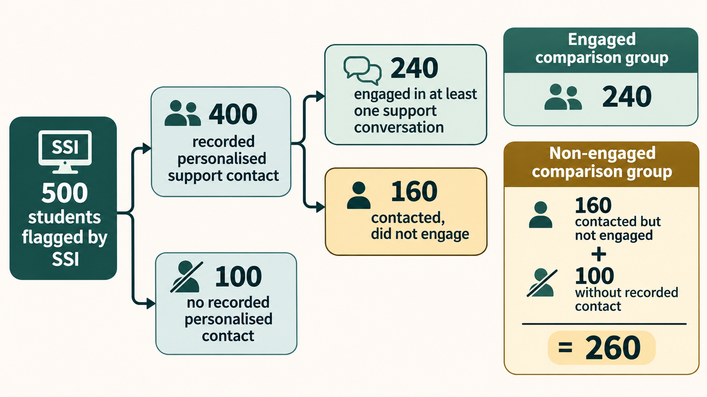
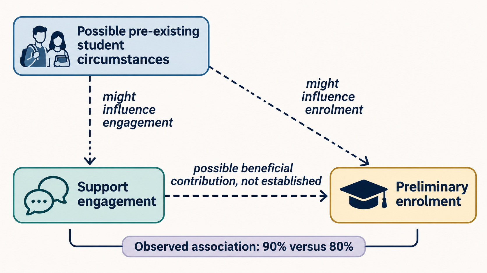
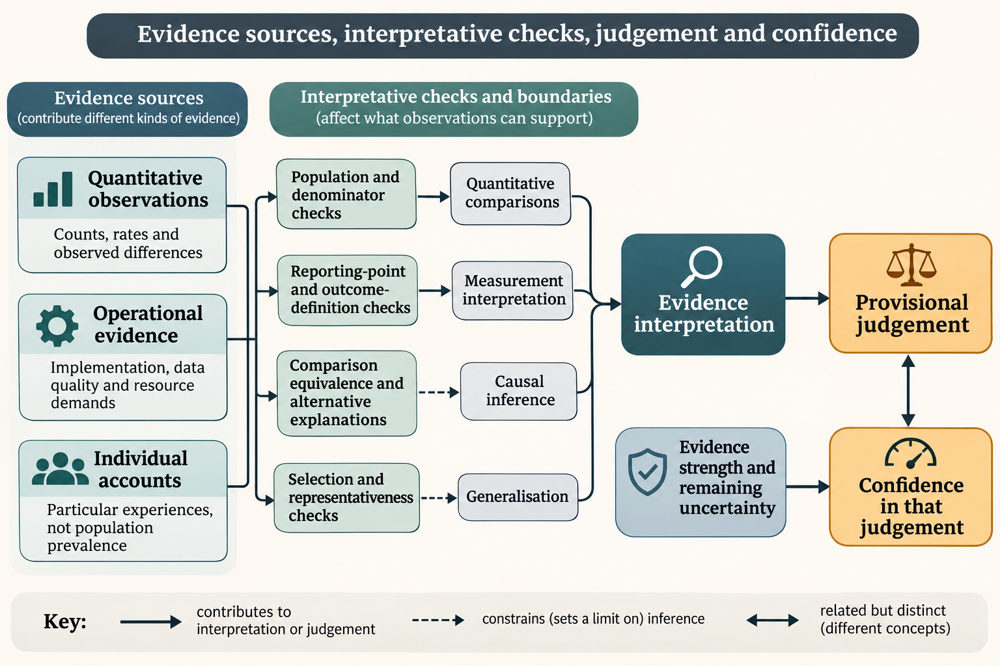
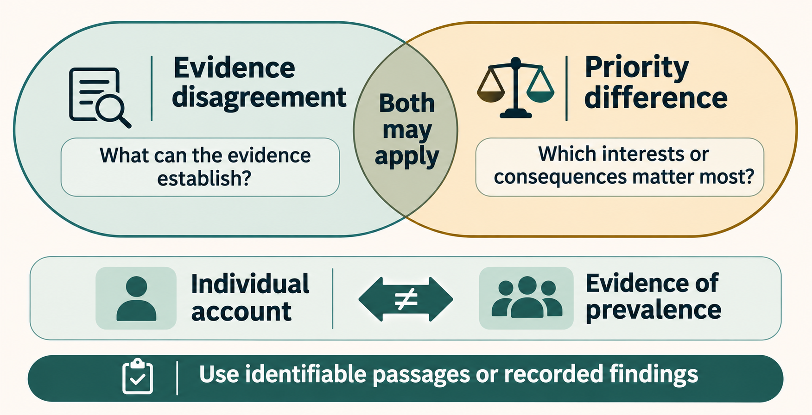

Figure 1. A quiet British university student support meeting room with a table, empty chairs, notebooks and an unopened folder labelled Student Support Insight.
A university introduces a new way of identifying students who might benefit from academic support. The early findings look promising. But what happens when further evidence raises difficult questions?
In this fictional case, you will follow Northbridge University as it considers the future of an AI-assisted student support initiative. You will interpret institutional findings, examine competing explanations, consider the experiences of students and staff, and recommend what the university should do next.
The challenge is not to understand how an AI system is built. It is to decide what evidence can justify, what remains uncertain and how an institution should act when different considerations point in different directions.
The journey takes approximately 90 minutes and can be completed independently in one day. You do not need specialist knowledge of AI, statistics or university management. Everything needed for the case is provided as you progress.
You will encounter the evidence in stages. At first, you will know only what the university knew when its initial evaluation appeared encouraging. Later experiences will introduce further findings and perspectives. Keep a note of your initial judgement and how confident you feel about it: you will return to both.
By the end, you should be able to distinguish findings from interpretations, assess limitations, weigh stakeholder consequences and justify a proportionate recommendation without pretending that all uncertainty has disappeared. There may be more than one defensible decision; what matters is the quality of your reasoning.
Draft not saved
The Promising Pilot
Overview
Northbridge University has introduced a fictional AI-assisted system to help identify first-year students who may benefit from academic support. The university has received an encouraging initial evaluation, but the evidence is not yet complete.
In this independent learning resource, you will explore how the system works, investigate the preliminary findings and record your own provisional judgement about whether the pilot appears worth continuing.
Begin with the institutional scenario and work through the four activities in order. Complete your interpretation of the evaluation before revealing its sample explanation. Keep your initial judgement and confidence rating for later reconsideration.
Learning purpose
Institutional decisions often have to be made before all the relevant evidence is available. This resource gives you an opportunity to practise interpreting numerical findings, distinguishing observations from causal claims and explaining a defensible position under uncertainty.
The quality of your reasoning matters more than whether you favour or oppose the pilot. You should be able to explain what the available evidence supports, what it cannot establish and how those limits affect your confidence.
Knowledge summary
Understanding the institutional setting
Northbridge University is a fictional public university in England. It wants to improve timely academic support for first-year undergraduates and help students continue their studies without undermining trust, autonomy or equitable treatment.
In September 2025, the university introduced Student Support Insight (SSI), an AI-assisted system that uses existing information about engagement with online learning systems, attendance where available and assignment submissions to identify possible support needs.
An SSI support flag is an indication for staff to consider. It is not a diagnosis, a measure of academic ability or an automatic decision about a student. Authorised staff review flags and decide whether personalised contact is appropriate. Students retain the choice to engage with an offer of support, and conventional academic support remains available independently of SSI.
Distinguishing stages of support
Three terms describe different events:
A support flag means the system has identified a possible need for attention.
Personalised support contact means staff have made a recorded approach to a student.
Support engagement means the student has attended at least one support conversation.
These stages must not be treated as interchangeable. A student may be flagged without receiving recorded contact, and a student who receives contact may not attend a conversation. The reasons for either outcome cannot be assumed from the stage alone.
Reading a preliminary evaluation
An evaluation may report counts, proportions and comparisons between groups. A count tells you how many students meet a specified condition. A percentage expresses a proportion relative to a particular denominator, so the group being counted must always be identified.
When comparing two percentages, the arithmetic difference is expressed in percentage points. For example, if 65% of one group and 55% of another meet a specified outcome, the difference is 10 percentage points. This is not the same calculation as a 10% relative increase.
The meaning of an outcome also depends on when and how it is measured. Being enrolled at a preliminary reporting point is not necessarily equivalent to confirmed continuation into the next academic year.
Association, causation and uncertainty
An observed association is a relationship found in recorded information. A causal claim goes further: it says that one factor produced a change in another.
When students have not been assigned to comparison groups in a way that makes them equivalent, differences between those groups may have several explanations. For instance, students who choose to use a support service might differ in motivation or circumstances from students who do not. These are possibilities to investigate, not facts that can be assumed about particular students.
An observed difference may therefore provide a reason for interest without establishing that a service caused it. Equally, the absence of causal proof does not establish that the service has no benefit. A careful evaluation distinguishes what was recorded, what might explain it and what remains unknown.
Making a provisional judgement
A provisional judgement is a reasoned position taken with the evidence currently available. It may favour an initiative, oppose it or remain undecided. A defensible judgement identifies relevant evidence, explains how that evidence supports the position and acknowledges uncertainty that could affect the conclusion.
Confidence is a separate consideration. It describes how securely the evidence supports your judgement, rather than how strongly you prefer a particular outcome. Recording your initial position, reasons, uncertainty and confidence creates a useful basis for reconsideration when further evidence becomes available.
Figure 1. How the SSI support process, preliminary evidence and provisional judgement relate without implying automatic or causal connections.
The map connects three conceptual groups. The support process begins with existing learning information and a possible SSI flag, followed by authorised staff review, possible personalised contact and optional student engagement. The evaluation group distinguishes recorded counts and proportions, observed group comparisons, preliminary outcomes and uncertainty about causes. The judgement group connects evidence and supporting reasons with unresolved uncertainty, a provisional position and confidence in that position. Links indicate that recorded evidence informs reasoning; they do not establish that engagement causes continuation or prescribe a particular decision.
Learning outcomes
By the end of this lesson, you should be able to:
Describe the purpose of Student Support Insight (SSI) and distinguish between a support flag, a personalised support contact and student engagement, including the roles of staff judgement and student choice. (LO1)
Interpret the preliminary SSI evaluation by identifying the relevant comparison groups, accurately describing their enrolment proportions and distinguishing an observed association from a demonstrated causal effect. (LO2)
Form and justify a provisional judgement about whether SSI appears worth continuing, using at least two relevant details from the available evidence and identifying one important uncertainty that limits the conclusion. (LO3)
Rate and explain confidence in the provisional judgement, distinguishing the strength of the available evidence from personal preference and identifying what may need reconsideration when further evidence becomes available. (LO4)
Trace the Student Support Process
Connect your learning
The Promising Pilot begins with a question about whether a new approach to student support appears promising. Before judging the evidence, establish what the initiative actually does and distinguish identification, contact and engagement.
Northbridge University is a fictional public university in England. In September 2025, it introduced Student Support Insight (SSI), an AI-assisted system intended to help staff identify first-year students who might benefit from academic support. Begin by examining how the system works and where staff and students make decisions. Allow approximately 3 minutes.
Follow what happens to a possible support need rather than assuming that the system itself makes every decision. Distinguish an indication, an offer and an action taken by a student.
Which part of the process depends on staff judgement, and which part depends on the student's choice?
Explore the idea
Read the fictional institutional scenario and trace the sequence from an SSI flag to a possible support conversation.
Figure 2. The possible SSI support pathway, with staff decisions and student choice shown as conditional stages.
Existing information about online learning engagement, available attendance and assignment submissions may contribute to an SSI support flag. The flag is considered by authorised staff, who decide whether personalised contact is appropriate. Where contact is offered, the student may attend a support conversation or decline. The branches distinguish identification from staff action and student engagement. A separate connection shows that conventional academic support remains available to students without requiring an SSI flag.
How SSI Fits into Human-Led Support
From information to support
SSI is best understood as an identification tool within a wider human-led support process. Its purpose is to draw staff attention to patterns that may indicate a student could benefit from contact. It does not establish why those patterns have occurred or determine what should happen next.
The process has four connected stages:
Identification: SSI examines existing information about online learning engagement, attendance where available and assignment submission patterns. It may generate a support flag.
Staff review: Authorised staff consider the flag and decide whether personalised contact is appropriate.
Contact: If staff decide to act, they may offer the student a support conversation or another appropriate route to assistance.
Engagement: The student decides whether to take up the offer. Attending a support conversation is a further step, not an automatic consequence of being flagged or contacted.
These stages matter because they describe different things. A flagged student has been identified by the system but may not have received contact. A contacted student has received an offer but may not have attended a conversation. A student who attends at least one support conversation has engaged with that support.
Human judgement and student choice affect how the process unfolds. For example, staff might review a flag and decide that contact is not appropriate at that time. Alternatively, staff might make contact but the student may decline. Neither outcome means that the system has made a diagnosis or an academic decision about the student.
Conventional support remains available independently of SSI. A student does not need an SSI flag to seek help.
As you construct your explanation, distinguish what the system indicates from what staff and students decide. Do not assume that each stage necessarily leads to the next.
Your task
Revising against
In the response workspace, explain the purpose of SSI and distinguish a support flag, a personalised support contact and support engagement.
Northbridge University: Introducing Student Support Insight
The institutional setting
Northbridge University is a fictional public university in England. Like many universities, it is concerned about first-year undergraduates who leave their courses before progressing to the second year. The university wants to identify students who may benefit from academic support while there is still time to offer it.
In September 2025, Northbridge introduced Student Support Insight (SSI), an AI-assisted system intended to help staff identify possible support needs earlier.
SSI draws on three categories of information already held by the university:
Engagement with the university's online learning systems.
Attendance information, where it is available.
Patterns of assignment submission.
The system uses these patterns to generate support flags for students who might benefit from additional academic contact.
What happens after a flag?
An SSI flag is reviewed by authorised university staff. Staff decide whether personalised contact is appropriate. A student who receives an offer may choose to engage with the suggested support or decline it. Existing academic support services remain available to students whether or not SSI has flagged them.
SSI does not diagnose students, determine academic ability, award grades or automatically impose sanctions.
Your focus
Trace the possible route from an SSI flag to a support conversation. Identify where the system supplies an indication, where staff exercise judgement and where students retain a choice.
This is a fictional case created for learning. It does not describe a real university's student monitoring system.
Identify one decision made by staff and one choice retained by students.
Your Explanation of the SSI Support Process
What to produce
A concise explanation that accurately identifies SSI's intended support purpose, distinguishes the three stages of identification, contact and engagement, and explains staff oversight and student choice. The explanation must not imply that a flag diagnoses a student, automatically triggers a sanction or guarantees a support conversation.
Your draft is saved on this device when possible. It is not submitted.
Record your response for Purpose of SSI.
Record your response for Flag, contact and engagement.
You have distinguished an SSI flag from an offer of support and actual engagement. Those distinctions now matter when reading the evaluation: the figures describe different groups and must not be treated as interchangeable.
Northbridge's preliminary evaluation, dated 12 March 2026, contains encouraging figures. Examine the reported groups and outcomes before deciding what the findings might mean. Allow approximately 4 minutes.
Start with the denominators and the meaning of engagement. Calculate the difference between the percentages, then separate the observed pattern from an explanation of why it occurred.
What can the comparison establish directly, and what would require stronger evidence?
Explore the idea
Comparing Percentages Without Overstating the Evidence
Percentage points
A percentage describes a proportion within a specified group. When two groups have different sizes, their percentages can be compared, but the denominator for each percentage still matters.
The difference between two percentages is expressed in percentage points. For example, if 60% of one group and 45% of another group meet an outcome, the difference is 15 percentage points. It would be misleading to call that a 15% relative increase, because a relative percentage change uses a different calculation.
For the Northbridge figures, identify each group and its denominator first. Then subtract the reported percentages and state the result in percentage points.
Association and causation
An observed association means that two characteristics occur together in the recorded data. It does not, by itself, establish that one caused the other.
For example, students who choose to attend support may differ from students who do not attend in ways that also affect their likelihood of remaining enrolled. Differences in motivation, circumstances or access to other help are possible explanations, not established facts about the Northbridge students.
A careful interpretation therefore separates three questions:
What difference is recorded between the groups?
What might explain the difference?
What further evidence would be needed to establish an effect of the support itself?
The evaluation also reports enrolment at a preliminary point. A student being enrolled on that date is not the same outcome as confirmed continuation into the following academic year.
Your task
Revising against
Inspect the preliminary evaluation record and identify the students being compared.
NB-SSI-01: Initial Evaluation Summary
Northbridge University — preliminary evaluation
Source: NB-SSI-01, Initial Evaluation Summary, 12 March 2026.
The figures below describe students flagged by Student Support Insight and their recorded support activity. The enrolment figures refer to the preliminary reporting point.
Recorded measure
Students
Definition or reporting status
Students flagged by SSI
500
First-year students identified as potentially needing academic support
Flagged students receiving recorded personalised contact
400
Students for whom a personalised support contact was recorded
Contacted students engaging in support
240
Students who attended at least one support conversation
Preliminary enrolment among flagged students
Comparison group
Students in group
Still enrolled at preliminary reporting point
Reported proportion still enrolled
Engaged with support
240
216
90%
Did not engage with support
260
208
80%
For this comparison, engagement means attendance at least one support conversation. The non-engaged group comprises flagged students without recorded engagement in a support conversation; it is not the same as the group that did not receive contact.
The initial evaluation summary characterises the findings as encouraging and recommends continuing the pilot while collecting more evidence. That is the summary's recommendation, not a conclusion you are required to accept.
The enrolment measure is preliminary. It is not a final measure of continuation into the next academic year.
Use the counts, denominators and reported percentages to form your own interpretation before consulting the review material.
Record the enrolment proportions for the two groups and calculate the difference in percentage points.
Your Interpretation of the Preliminary Evaluation
Explain what relationship the figures show and whether they establish that support engagement caused the observed difference.
Distinguish preliminary enrolment from final continuation.
What to produce
An accurate comparison that identifies the groups and denominators, records the reported enrolment proportions, calculates their percentage-point difference, describes the observed relationship and states an appropriate limit on causal interpretation. The response must recognise that the outcome concerns enrolment at a preliminary reporting point, not final continuation.
Your draft is saved on this device when possible. It is not submitted.
Record your response for Groups and denominators.
Record your response for Reported enrolment proportions.
Record your response for Difference in percentage points.
Record your response for Observed relationship.
Record your response for Limits of the conclusion.
Have you distinguished the observed relationship from a demonstrated causal effect?
Show guidance for criterion 3
Why this matters
The data compare groups with different recorded engagement, but do not establish that engagement itself produced the enrolment difference.
What to look for
A. The interpretation describes the difference as an observed association.
B. The response avoids saying that support engagement or SSI proved the outcome.
C. At least one plausible alternative explanation is acknowledged as uncertain.
If something is missing
Missing A: Describe what the enrolment figures record before offering an explanation of why the groups differ.
Missing B: Replace any claim of proven impact with a statement limited to the observed comparison.
Missing C: Identify a possible difference between students who engaged and those who did not, without presenting that possibility as an established fact.
Compare your own response with the explanation below. It is feedback on the evidence, not a prescribed decision about SSI.
The comparison
The engaged group consists of 240 flagged students who attended at least one support conversation. Of these, 216 were still enrolled at the preliminary reporting point, or 90%.
The non-engaged group consists of 260 flagged students who did not engage in a support conversation. Of these, 208 were still enrolled at that point, or 80%.
The observed difference is:
\[
90\%-80\%=10\text{ percentage points}
\]
The engaged group therefore had a preliminary enrolment rate 10 percentage points higher than the non-engaged flagged group.
What the finding does and does not establish
This is an encouraging observed relationship between recorded support engagement and preliminary enrolment. It is consistent with the possibility that support conversations are helpful, but it does not establish that attending a conversation caused the difference.
Students were not necessarily comparable before engaging with support. Their circumstances, existing difficulties or willingness to seek help could have differed. The figures alone cannot separate these possible explanations from an effect of support.
The outcome is also limited to being enrolled at the preliminary reporting point. It must not be described as final continuation into the next academic year.
Common errors to correct
Using 400 as the denominator for the engaged group confuses students receiving contact with students attending support. The engaged comparison group contains 240 students.
Using 100 as the denominator for the non-engaged group confuses students without recorded contact with students without recorded engagement. The non-engaged comparison group contains 260 flagged students.
Calling the difference a 10% increase rather than 10 percentage points changes the meaning of the calculation.
Saying that SSI or support conversations proved a reduction in withdrawal converts an observed association into a causal claim.
Calling the outcome final continuation overlooks the preliminary reporting status.
A learner may reasonably give this early evidence substantial weight or remain cautious about it. The quality of the judgement depends on accurate interpretation and recognition of uncertainty.
Make Your Provisional Judgement
Connect your learning
Your interpretation of the preliminary figures provides the evidence for a decision under uncertainty. The challenge now is to decide how much weight to give the encouraging pattern while recognising what it cannot establish.
You have examined the preliminary findings and their limitations. Now decide whether the available evidence makes SSI appear worth continuing. This is an initial judgement, not a final committee recommendation. Different positions are acceptable when supported by accurate reasoning. Allow approximately 3 minutes.
Weigh three considerations: what the early evidence suggests, what it cannot establish and whether the possible value of continuing warrants further investigation. A cautious positive position and a sceptical position can both be reasoned responses.
Which case detail most influences your position, and what uncertainty prevents you from treating it as a settled conclusion?
Explore the idea
Evidence Reference for Your Provisional Judgement
Northbridge University: available evidence
Institutional aim: identify first-year students who might benefit from timely academic support.
Source: NB-SSI-01, Initial Evaluation Summary, 12 March 2026.
Measure
Recorded value
First-year students flagged by SSI
500
Flagged students receiving recorded personalised contact
400
Contacted students attending at least one support conversation
240
Enrolment at the preliminary reporting point
Flagged-student group
Total in group
Still enrolled
Reported proportion
Engaged in at least one support conversation
240
216
90%
Did not engage in a support conversation
260
208
80%
The evaluation records enrolment at a preliminary point, not final continuation. The groups differ in recorded engagement; the figures do not establish why their enrolment proportions differ.
Use this reference to select the evidence relevant to your provisional judgement. No further evaluation findings are available at this stage of the experience.
Weighing the Early Evidence
Deciding under uncertainty
The university's immediate question is whether the early findings make SSI appear worth continuing while more evidence is collected. This is narrower than deciding whether SSI has been proven effective or should be adopted permanently.
The evaluation provides two kinds of relevant information. The identification, contact and engagement counts describe how far students progressed through the support process. These counts matter to the aim of timely support because a system that identifies students but does not lead to meaningful contact or engagement would offer a different practical prospect from one that does. However, the counts alone do not tell us whether students benefited.
The preliminary enrolment comparison addresses a possible outcome of interest. The recorded proportions can be weighed as a reason for interest in the pilot. Their evidential strength is limited, however, because students who engaged with support may have differed from those who did not. The comparison cannot isolate the effect of attending a conversation.
These considerations pull in different directions. An institution may regard a promising pattern as sufficient reason to continue gathering evidence, especially when the initiative is intended to offer help rather than impose academic consequences. Another judgement may place greater weight on uncertainty about whether the observed difference reflects the support itself. Neither approach should turn a provisional observation into a proven causal effect.
Your position should reflect how you weigh the evidence against the uncertainty. State whether you favour continuing, lean towards continuing, are undecided, lean against continuing or oppose continuing. Then explain which case details influence that position and why. Include a numerical finding, but use it to support an argument rather than allowing a single figure to stand in for the whole judgement.
Finally, identify an uncertainty that matters to your decision. A useful uncertainty is one whose resolution could reasonably change how you assess the pilot. The aim is a defensible initial judgement, not agreement with the evaluation summary's recommendation.
Your task
Revising against
Revisit the preliminary evaluation and choose an initial position: favour continuing, lean towards continuing, undecided, lean against continuing or oppose continuing.
Record Your Initial Position
Explain your position in approximately 80–120 words using at least two specific case details, including one numerical finding.
Identify one important uncertainty that prevents a firmer conclusion.
Review whether your reasons support your chosen position without presenting association as proof of causation.
What to produce
A clearly stated provisional position accompanied by a coherent 80–120-word justification that accurately uses at least two relevant case details, including one numerical finding. The learner identifies a meaningful unresolved uncertainty and reaches no stronger conclusion than the preliminary evidence warrants. No particular position is required.
Your draft is saved on this device when possible. It is not submitted.
Record your response for My provisional position.
Record your response for My supporting reasons.
Record your response for One important uncertainty.
Have you explained how the evidence supports your position?
Show guidance for criterion 3
Why this matters
Simply listing facts does not show why they should influence an institutional decision under uncertainty.
What to look for
A. The response connects at least one observed finding to the university's aim of timely academic support.
B. The response weighs a reason for interest in SSI against a reason for caution.
C. The reasoning is consistent with the selected provisional position.
If something is missing
Missing A: Explain how the chosen observation matters to the prospect of identifying or helping students earlier.
Missing B: Identify what gives the pilot possible value and what limits the strength of that consideration, then explain which you give more weight.
Missing C: Check whether your stated balance of evidence and uncertainty actually supports the degree of support, opposition or indecision you selected.
You have formed a provisional judgement and explained the evidence behind it. Confidence adds a different dimension: it expresses how securely that position is supported. Communicating the finding to another audience also tests whether you can preserve its meaning without overstating it.
Your provisional position is now available for reflection. Assess how confidently you hold it, then apply the same evidence-aware reasoning to a different communication task. Keep your initial judgement, reasons and confidence for reconsideration later in the Learning Journey. Allow approximately 2 minutes.
Confidence concerns the strength of the evidence, not how strongly you feel about your preferred position. When addressing students, keep the observed result and its limitation visible while avoiding unnecessary technical language.
What makes your judgement more or less secure? How would you explain the preliminary result to someone who has not examined the evaluation?
Explore the idea
Preliminary Evidence for Confidence and Communication
NB-SSI-01 — Initial Evaluation Summary
Date: 12 March 2026.
Outcome measured: students still enrolled at the preliminary reporting point.
Flagged-student group
Students in group
Still enrolled
Reported proportion still enrolled
Attended at least one support conversation
240
216
90%
Did not engage in a support conversation
260
208
80%
These are preliminary enrolment observations for groups distinguished by recorded support engagement. They are not final continuation results.
Consult the original figures when explaining your confidence and preparing a message for new students.
Your task
Revising against
Rate your confidence from 1 (very uncertain) to 5 (very confident) and explain briefly why that rating matches the strength of the available evidence.
Your Confidence and Student-Facing Message
Inspect a short draft headline intended for new students about the preliminary SSI findings. Write a replacement headline and one explanatory sentence that communicate the evidence accurately without claiming proven causation.
Fictional Draft Headline for New Students
Card 1
Simulated communication candidate
The following is a fictional draft headline prepared solely for this learning exercise. It is not an authoritative Northbridge University finding or a statement made by a real university representative.
> SSI support conversations keep more students enrolled, university pilot proves.
Intended audience: new undergraduate students.
Use the preliminary evaluation reference to examine the wording of this draft. Your task is to produce a replacement headline and one explanatory sentence that communicate the available finding without claiming more than the evidence establishes.
What to produce
A five-point confidence rating with a concise evidence-related explanation that distinguishes confidence from support for or opposition to SSI. A replacement student-facing headline and explanatory sentence should accurately communicate the preliminary finding, avoid unwarranted causal claims and remain understandable without specialist terminology. The learner identifies what remains uncertain and retains a clear record of the initial judgement.
Your draft is saved on this device when possible. It is not submitted.
Complete your response first, then use this material to check or improve it.
Check your confidence explanation and revised communication against the diagnostic criteria. Retain your initial judgement, reasons and confidence for later reconsideration.
Review your answer
Criterion 1 of 4
Have you justified your confidence rating using the available evidence?
Show guidance for criterion 1
Why this matters
A number without an evidence-related explanation does not reveal how securely the provisional judgement is held.
What to look for
A. A rating from 1 to 5 is recorded.
B. The explanation identifies something in the preliminary findings that affects confidence.
C. The explanation acknowledges a limitation that affects the strength of the judgement.
If something is missing
Missing A: Choose a value on the stated confidence scale and ensure it represents certainty rather than approval.
Missing B: Connect your rating to a relevant feature of the reported comparison or the scope of the evaluation.
Missing C: Identify how uncertainty about the comparison or reporting point constrains the firmness of your position.
Have you distinguished confidence from your preference about continuing SSI?
Show guidance for criterion 2
Why this matters
Strong support for a policy and strong confidence in the evidence are different judgements; conflating them conceals uncertainty.
What to look for
A. The confidence explanation addresses the security of the evidence-based judgement.
B. The rating remains compatible with a favourable, sceptical or undecided position.
If something is missing
Missing A: Explain how well the current findings support your position rather than repeating how much you like or dislike SSI.
Missing B: Check that your reasoning could explain the certainty of your chosen position without assuming that one position must always receive a higher confidence score.
You have already used the preliminary evaluation to form your own institutional judgement. Now apply the same care with evidence to a different purpose: writing for students who have not read the evaluation.
Read the fictional draft headline in the task card and consult the NB-SSI-01 reference.
Produce two pieces of text:
A replacement headline suitable for new undergraduate students.
One explanatory sentence that conveys the observed preliminary relationship and makes its evidential limitation clear.
Your wording should be accessible, accurate and proportionate to the findings. Do not introduce additional statistics or imply that the evaluation has established a causal effect. Enter both responses in the corresponding locations in your workspace.
Your draft is saved on this device when possible. It is not submitted.
Reading the Evidence Carefully
An encouraging result, but what does it tell us?
Northbridge University introduced Student Support Insight (SSI) in September 2025 because it wanted to identify first-year students who might benefit from academic support before difficulties became more serious. The university was concerned about students leaving their courses before the second year and hoped that earlier conversations could help.
SSI is an AI-assisted advisory system. It uses existing information about engagement with university learning systems, attendance where available, and assignment submission patterns to identify students who may benefit from support. A flag is not a diagnosis or a judgement about academic ability. Authorised staff review flags and decide whether to contact students. Students can decline support, and conventional academic support routes remain available.
The university's initial evaluation summary, NB-SSI-01, dated 12 March 2026, reported an encouraging difference. Among students flagged by SSI, 90% of those who engaged in a support conversation were still enrolled at the preliminary reporting point. Among flagged students who did not engage, the corresponding figure was 80%.
It is reasonable to notice that difference. A higher enrolment rate among students who engaged with support is potentially useful information for a university trying to improve student continuation. But there is a further question: does the difference show that support engagement caused students to remain enrolled?
Those are not equivalent claims. The first describes what was observed. The second offers an explanation for why it happened. Moving from one to the other requires additional reasoning and evidence.
If you completed The Promising Pilot, revisit the provisional judgement you made about SSI, including your reasons and how confident you felt. Keep that judgement in mind as you examine which parts of your reasoning follow directly from the preliminary findings and which depend on assumptions. You do not need to have reached a particular conclusion, and the relevant figures are provided here independently.
Reading evidence carefully does not mean assuming that encouraging findings are misleading. Nor does it mean accepting a positive interpretation simply because the numbers look persuasive. It means being precise about what the evidence establishes, considering what else could explain the pattern, and adjusting confidence to match the strength of the evidence.
What was counted, and who was compared?
Before deciding what the preliminary figures mean, we need to understand exactly who was counted. A percentage can appear straightforward while concealing an important question: a percentage of which group?
The initial evaluation recorded 500 students who had been flagged by SSI. Of those students, 400 received a recorded personalised offer of academic support. This is called support contact. Of the contacted students, 240 attended at least one support conversation. This is called support engagement.
These numbers describe different events. Being flagged does not mean that a student was contacted. Being contacted does not mean that a student attended a conversation. And attending a conversation does not, by itself, establish that the conversation improved the student's circumstances.
The difference between the 500 flagged students and the 240 who engaged is 260. These 260 students form the non-engaged comparison group. They should not all be described as students who refused help. Some did not receive a recorded personalised contact; others were contacted but did not attend a support conversation. The summary does not establish why each individual did not engage.
A count tells us how many cases meet a particular description. A percentage tells us what share of a defined group those cases represent. To calculate a percentage, divide the relevant count by the total number in that group, known as the denominator, and multiply by 100.
For the 240 flagged students who engaged, 216 were still enrolled at the preliminary reporting point. The calculation is 216 ÷ 240 × 100 = 90%. The denominator is 240 because the question concerns students who engaged, not all students flagged by SSI.
For the 260 flagged students who did not engage, 208 were still enrolled. The calculation is 208 ÷ 260 × 100 = 80%. Here the denominator is 260 because the question concerns the non-engaged group.
Subtracting 80% from 90% gives a difference of 10 percentage points. A percentage-point difference is the direct difference between two percentages. It is not the same as saying that engagement increased an individual's chance of remaining enrolled by 10%, and it does not establish that engagement caused the difference.
Notice also that both groups consist of students who were flagged by SSI. The comparison is not between every student who used SSI and every student who did not. It is between flagged students who engaged with a support conversation and flagged students who did not engage.
The reported outcome is similarly specific: students were still enrolled at the preliminary reporting point. The figures do not yet tell us whether they eventually continued into the next academic year.
We can therefore state the numerical finding accurately: among the 500 students flagged by SSI, 90% of those who engaged with support and 80% of those who did not engage were still enrolled at the preliminary reporting point. The observed difference was 10 percentage points.
That statement establishes the pattern in the reported data. Explaining why the pattern exists is a separate matter.
From support flags to support conversations
Preliminary enrolment among flagged students
Both groups were flagged by SSI. They differ according to whether students attended at least one support conversation.
Comparison group
Still enrolled
Total in group
Preliminary enrolment rate
Flagged and engaged
216
240
90%
Flagged and did not engage
208
260
80%
Outcome
Still enrolled at the preliminary reporting point
Worked difference
Label
Difference between the reported rates
Calculation
90% − 80% = 10 percentage points
Result
10 percentage points
Accessible text
Among 240 flagged students who engaged with support, 216 were still enrolled at the preliminary reporting point, equivalent to 90%. Among 260 flagged students who did not engage, 208 were still enrolled, equivalent to 80%. The difference between the reported enrolment rates was 10 percentage points.
The comparison establishes a higher recorded preliminary enrolment rate in the engaged group. It does not establish that engagement produced the difference.

Figure 1. How the 500 flagged students divide into 240 who engaged with support and 260 who did not engage.
A compact top-down branching diagram begins with a single box labelled '500 students flagged by SSI'. Two connected branches lead to '400 received recorded personalised support contact' and '100 no recorded personalised contact'. The 400-contact branch divides into '240 engaged in at least one support conversation' and '160 contacted but did not engage'. At the bottom, a comparison-group summary visually connects the 240 engaged students to an 'Engaged: 240' total and the 160 plus 100 students to a 'Did not engage: 260' total. Connectors must follow these exact branches and no others. The diagram uses neutral, accessible styling, clear numerical labels and sufficient spacing for the nested structure to remain legible. A small note explains that non-engagement does not necessarily mean refusal.
From observation to interpretation
The Northbridge calculations are straightforward once the groups are correctly identified. The difficulty begins when we turn those numbers into statements about SSI.
An observation is something recorded or measured. For example, the initial evaluation recorded that 216 of the 240 flagged students who engaged with support were still enrolled at the preliminary reporting point. This statement describes a reported outcome for a defined group.
An association is a relationship observed between two characteristics or outcomes. In this case, engagement with support was associated with a higher preliminary enrolment rate among flagged students. The relationship is visible because the engaged and non-engaged groups had different recorded rates.
Association tells us that two things occurred together in a particular pattern. It does not, on its own, tell us why.
A causal interpretation makes a stronger claim. It proposes that one factor produced a change in another. Saying that support engagement caused more students to remain enrolled is therefore different from saying that students who engaged had a higher enrolment rate. The causal claim attributes the difference to the support conversation itself.
That interpretation may be plausible. A supportive conversation could help a student identify difficulties, access advice or decide to remain on their course. These are possible ways in which support might be beneficial. But a plausible mechanism is not proof that the mechanism produced the observed difference in this evaluation.
A further type of statement is an evaluative judgement or opinion. The preliminary summary described the difference as encouraging. This is an assessment of the finding's significance rather than another measurement. It is not automatically unreasonable: a university seeking to support students may regard a positive association as a reason to investigate further.
The judgement becomes problematic if 'encouraging' is treated as interchangeable with 'proven effective'. A finding can justify interest, cautious optimism or further investigation without establishing the causal explanation behind it.
Consider how the wording changes the claim. 'The engaged group had a 90% preliminary enrolment rate' reports a finding. 'The engaged group had a higher rate than the non-engaged group' identifies an association. 'Engagement caused the higher rate' asserts causation. 'The difference is encouraging' evaluates the significance of the association. Each statement performs different intellectual work, and the evidence needed to justify it differs accordingly.
It is also possible to overcorrect. If a causal claim is not established, it does not follow that the recorded difference is imaginary or irrelevant. The observations remain part of the evidence. The responsible response is to preserve what the comparison shows while being cautious about explanations that go beyond it.
This is a general principle of evidence literacy: the strength of a conclusion should match the strength of the evidence supporting that particular conclusion. We can be confident that the reported rates differ while being less confident about the reason for the difference.
Four ways of describing the same finding
Statements about the same figures can make different kinds of claims. The wording determines how much justification is needed.
Type of statement
Example
What the evidence supports
Observation
Of the 240 flagged students who engaged with support, 216 were still enrolled at the preliminary reporting point.
Directly supported by the reported count and denominator. It describes a recorded outcome for one group.
Association
Flagged students who engaged had a higher preliminary enrolment rate than flagged students who did not engage: 90% compared with 80%.
Directly supported by comparing the two reported rates. It establishes a relationship in the observed data, not its cause.
Causal interpretation
Support engagement caused the engaged group's preliminary enrolment rate to be 10 percentage points higher.
Not established by the comparison. This explanation would require a credible way to distinguish the effect of support from differences between the groups and other influences.
Evaluative judgement
The 10-percentage-point difference is encouraging and warrants further investigation.
A defensible assessment of the positive association, provided it remains provisional and does not claim that effectiveness has been demonstrated.
The causal statement adds an explanation that the observed figures cannot verify. The evaluative statement instead considers the significance of the finding while leaving its cause open.
Why might the groups differ?
Why is the higher enrolment rate among engaged students not enough to demonstrate that engagement caused the difference?
The two groups were not formed through random assignment. Students were not randomly allocated to attend a support conversation or to avoid one. Instead, some flagged students engaged with the support offered and others did not. Their engagement may have been related to circumstances that also influenced whether they remained enrolled.
Imagine two hypothetical students who both receive an offer of support. One has time to attend a conversation, already feels connected to their course and is comfortable asking for help. The other is dealing with competing responsibilities, finds it difficult to arrange a meeting or is uncertain about whether university support will help. Their different responses to the offer might be connected to circumstances that also affect their ability to remain enrolled.
This example does not establish that students at Northbridge differed in these particular ways. It illustrates a possibility that the preliminary figures cannot rule out.
A selection effect occurs when the characteristics that influence whether people enter or participate in a group are also related to the outcome being studied. In the SSI comparison, students who attended a conversation may have differed from those who did not in motivation, circumstances or existing support networks. Such differences could contribute to the observed enrolment rates even if the conversations themselves had no effect.
Another possibility is that the conversations genuinely helped some students remain enrolled. A third possibility is that both processes operated: support had a beneficial effect, while pre-existing differences between the groups also influenced the outcome.
These explanations are not mutually exclusive. The preliminary evidence is compatible with more than one account of what happened.
The related idea of confounding describes a situation in which another factor is associated with both the characteristic being investigated and the outcome. If a student's circumstances influence both their likelihood of engaging with support and their likelihood of remaining enrolled, those circumstances complicate the interpretation of the relationship between engagement and enrolment.
The difficulty is not that the reported numbers are necessarily wrong. It is that the comparison does not isolate the effect of support from other possible influences.
To establish a causal effect, we would want to know what would have happened to the students if they had not engaged with support. This is the counterfactual question. We cannot observe the same student, under identical circumstances, both engaging and not engaging with the conversation. Evaluation therefore needs a credible basis for estimating what would otherwise have happened.
The initial Northbridge comparison does not provide that basis with sufficient confidence. The non-engaged students are a comparison group, but they are not automatically an equivalent substitute for what would have happened to the engaged students without support.
This does not mean that the intervention was ineffective. An alternative explanation is not a disproof. It identifies another credible account that must be considered before assigning a causal interpretation to the observed pattern.
For example, if someone argues that the 10-percentage-point difference proves the support conversations worked, you can respond by asking whether students who engaged may already have differed in ways relevant to enrolment. That question identifies a limitation without denying that support might have been helpful.
The strongest conclusion available from the preliminary comparison is therefore more restrained than either complete endorsement or complete rejection. Engagement and higher preliminary enrolment occurred together. Support may have contributed, but the comparison cannot establish how much of the difference, if any, was caused by engagement.
More than one possible route to the observed difference

Figure 2. Several possible influences could contribute to the association between support engagement and preliminary enrolment.
What the measures cannot tell us
Even if we set aside the question of causation, there is another limit to what the preliminary evaluation can tell us. We must consider whether the measures actually represent the outcomes we are interested in.
SSI was introduced to help staff identify students who might benefit from timely academic support. A support flag is an indication of possible need, not confirmation that the student is struggling. The system uses available patterns of engagement and study activity, but those patterns do not provide a complete account of an individual's circumstances.
Similarly, a recorded personalised contact tells us that an offer of support was made. It does not establish whether the student welcomed the contact, understood the offer or benefited from it.
Support engagement is more specific: a student attended at least one support conversation. This provides evidence that a conversation occurred, but attendance is not the same as a measured improvement in academic confidence, wellbeing or educational experience.
The preliminary enrolment figures measure another distinct outcome. They report whether students were still enrolled at the preliminary reporting point. Remaining enrolled is relevant to the university's concern about student continuation, but it is not identical to final continuation into the next academic year. The reporting point matters because a student's status may change later.
Measurement validity concerns whether a measure adequately represents the concept we want to understand. Preliminary enrolment is a relevant indicator of whether students were still studying at that point. It is not, by itself, a complete measure of student success or the quality of the support received.
Consider the statement: 'The preliminary evaluation demonstrates that SSI improved students' wellbeing.' The reported enrolment figures cannot establish that claim. Wellbeing was not measured by those figures. Even if more students remained enrolled, we would still need suitable evidence about their wellbeing before making that conclusion.
The same reasoning applies to a claim that every student flagged by SSI needed support. The number of flags tells us how many students the system identified, not whether every identification accurately reflected an individual need.
Incomplete information creates further uncertainty. The preliminary summary does not tell us enough about the circumstances of the engaged and non-engaged groups to establish why their enrolment rates differed. It also does not provide a complete picture of the students' experiences of support.
These are different limitations. Selection effects concern whether the comparison groups differ in ways that influence the outcome. Measurement limitations concern what the recorded information can legitimately represent. Both affect the strength of a conclusion, but they do so for different reasons.
Careful interpretation therefore requires two questions. First, does the evidence justify the proposed explanation for the observed difference? Second, does the measure itself capture the outcome being claimed? A conclusion may exceed the evidence on either ground.
Making a judgement the evidence can support
A proportionate reading of the preliminary evidence
A balanced interpretation keeps the reported finding separate from explanations that still need testing.
Question
Proportionate interpretation
What the evidence shows
Among flagged students, 90% of those who engaged and 80% of those who did not engage were still enrolled at the preliminary reporting point. The observed difference was 10 percentage points.
What it does not establish
The comparison does not establish that support engagement caused the difference or that the preliminary outcome represents final continuation or wider educational benefit.
What else might explain the difference
Students who engaged may have differed in relevant circumstances from those who did not. Support may also have helped. These explanations could operate separately or together.
How confident can we be?
We can be confident about the arithmetic of the reported comparison while remaining less confident about its causal explanation. The positive association is encouraging but provisional.
A justified conclusion preserves the observed association, identifies the limits of causal inference and matches confidence to what the evidence can support.
The preliminary Northbridge evidence can now be interpreted with greater precision.
Suppose someone concludes: 'SSI support increased student enrolment by 10 percentage points.' The statement uses the reported difference, but it attributes that difference to support. The evaluation has not established this causal explanation.
A more proportionate interpretation would be: 'Among students flagged by SSI, 90% of those who engaged with support and 80% of those who did not engage were still enrolled at the preliminary reporting point. The 10-percentage-point difference is encouraging, but it does not establish that support engagement caused the difference.'
This revised statement retains the useful evidence. It identifies the groups, the measured outcome and the observed difference. It also makes the limit of the causal claim explicit.
Confidence can be considered separately for different parts of the interpretation. The arithmetic is clear: 216 out of 240 is 90%, and 208 out of 260 is 80%. We can have substantial confidence in the reported numerical comparison as an accurate description of the supplied preliminary figures.
Our confidence that engagement caused the difference should be more limited. Students were not randomly assigned to the two groups, and the available evidence does not establish whether differences in their circumstances influenced both engagement and enrolment. The figures also concern a preliminary reporting point rather than a final continuation outcome.
This is calibrated confidence: the degree of certainty attached to a claim reflects the evidence supporting that particular claim. It is possible to be confident about an observation and uncertain about its explanation without contradiction.
Two extreme interpretations illustrate the problem. Saying 'the figures prove SSI works' treats an association as a demonstrated causal effect. Saying 'the figures tell us nothing' dismisses an observed difference that may still be informative. Neither response accurately represents the preliminary evidence.
A defensible interpretation lies between them, although it does not prescribe a single judgement about what Northbridge should eventually do. The preliminary findings may reasonably support cautious optimism and further investigation. They do not establish how much benefit, if any, can be attributed specifically to support engagement.
When you consider your provisional judgement from The Promising Pilot, distinguish the reasons that relied on the reported observations from those that depended on an explanation for the difference. You may find that your overall judgement remains reasonable but that your confidence needs adjusting. Alternatively, you may decide that some of your earlier reasoning should be revised. The purpose is not to change your mind automatically; it is to make the reasoning behind your judgement more defensible.
The same approach will be useful in When the Evidence Changes. Additional findings may support, qualify or challenge an initial interpretation. Evaluating them requires more than deciding whether each new number looks positive or negative. It requires attention to comparison groups, measurement, alternative explanations and the strength of the conclusions drawn.
Reading evidence carefully means holding two ideas together: the preliminary association is real within the reported data, and its cause remains uncertain. You can preserve a finding's value without claiming that it proves more than it does. That is the foundation of evidence-informed judgement.
Draft not saved
When the Evidence Changes
Overview
This self-study resource examines new evidence from Northbridge University's fictional Student Support Insight (SSI) pilot. Begin by comparing the preliminary and final evaluation records, then examine the limitations and experiences that complicate their interpretation. Use the later activities to reconcile competing readings and reconsider your provisional judgement. Allow approximately 20 minutes, and consult your earlier work from The Promising Pilot and Reading the Evidence Carefully where available.
Learning purpose
The first part of the resource establishes a basis for comparing and appraising evidence. The second part uses that appraisal to support an integrated interpretation and a review of confidence. Complete your own reasoning before consulting the diagnostic review criteria.
Knowledge summary
Evidence-informed judgement requires attention to what was measured, who was included, how observations were collected and which conclusions the evidence can support. New findings may strengthen, weaken or qualify an earlier interpretation without necessarily reversing it.
Observation, association and causation
An observation describes a recorded finding. An association describes a relationship between observed characteristics or outcomes. A causal claim goes further: it proposes that one factor produced a change in another. An observed difference between students who engage with support and those who do not is not, by itself, evidence that engagement caused the difference. Students may have different circumstances, motivations or access to other forms of support.
A causal interpretation therefore requires consideration of alternative explanations and the design of the comparison. This does not make observational findings uninformative. It establishes a boundary around what they can demonstrate.
Populations, denominators and reporting points
A percentage has meaning only in relation to its denominator: the population or group from which it was calculated. Before comparing rates, identify the people included in each group and whether the groups are sufficiently comparable for the proposed inference.
The reporting point and outcome definition matter too. Preliminary enrolment and continuation at a later evaluation cut-off are related but distinct measures. A difference between their reported values should not automatically be interpreted as an inconsistency or an intervention effect.
Historical comparisons require similar care. Even when two cohorts have the same number of students and use the same outcome definition, they may differ in characteristics, circumstances or concurrent support provision. A change between academic years cannot automatically be attributed to one initiative.
Evaluating different kinds of evidence
Quantitative records can establish counts, rates and observed differences within their stated populations. Their interpretation depends on data quality, selection processes, measurement definitions and the availability of suitable comparisons.
Operational evidence addresses whether an initiative was delivered as intended, including whether identified students received contact, whether input records were complete and what staff resources were required. Delivery and implementation are relevant to interpreting an intervention, but an operational finding does not independently establish its educational effect.
Equity-related evidence requires attention to the difference between an observed group disparity and an explanation for that disparity. Different flag rates across groups may warrant investigation without independently demonstrating discrimination, predictive accuracy or the reason for the difference.
Selected samples also limit generalisation. A review of students recruited through a particular support route cannot automatically establish an overall missed-identification rate. Population-level accuracy estimates require appropriately defined and sufficiently representative evidence.
Qualitative accounts can reveal how students and staff experience an initiative, including benefits, misunderstandings and practical constraints that aggregate outcome measures may not capture. Individual accounts provide evidence of particular experiences, not their prevalence across the whole student population.
Reconciling findings and weighing evidence
Apparently conflicting findings may arise because different records concern different populations, measures or reporting points. Other tensions are substantive: two observations may both be credible while leaving an important question unresolved.
A useful reconciliation begins by checking the source and scope of each finding. It then considers plausible explanations, asks which interpretations accommodate the available evidence and identifies what remains uncertain. A plausible explanation is not an established cause.
Evidence should be weighted according to the claim being assessed. A continuation record may be directly relevant to an outcome claim, while an operational record may be more informative about delivery and an individual account about lived experience. No single source answers every evaluative question.
Provisional judgement and calibrated confidence
A provisional judgement is the interpretation currently considered most defensible. Confidence expresses how securely the available evidence supports that interpretation. The judgement and confidence can change independently.
Retaining an earlier position can be as reasonable as revising it, provided the reasoning engages with new evidence and its limitations. A well-calibrated conclusion identifies its strongest supporting observations, addresses consequential counterevidence and states what cannot yet be established.
The purpose at this stage is to develop a defensible interpretation of the evidence, not to make the institution's final decision.

Figure 1. How different evidence sources and inferential checks contribute to a provisional judgement and calibrated confidence.
Three evidence categories contribute to interpretation: quantitative observations provide counts, rates and differences; operational evidence describes implementation, data quality and resources; individual accounts describe particular experiences. Interpretation is qualified by checks on populations, denominators, reporting points, outcome definitions, comparison equivalence, alternative explanations, selection and representativeness. The resulting interpretation informs a provisional judgement. Evidence strength and remaining uncertainty inform confidence, which is shown as distinct from the judgement itself. No case-specific conclusion is supplied.
Learning outcomes
By the end of this lesson, you should be able to:
Compare preliminary and final evaluation findings for Student Support Insight (SSI), identifying relevant differences in outcomes, populations, denominators and reporting points, and distinguishing observed associations from claims of causation. (LO1)
Evaluate the strength and limitations of quantitative and qualitative evidence about SSI, identifying plausible alternative explanations, operational and equity concerns, and conclusions that cannot be established from the available findings. (LO2)
Reconcile apparently conflicting findings by constructing a reasoned interpretation that distinguishes differences in measurement or population from substantive tensions, and explains how the combined evidence affects the strength of competing interpretations. (LO3)
Justify a revised, retained or more qualified provisional judgement about SSI, explaining which evidence carries the greatest weight and calibrating confidence in that judgement against the remaining uncertainty. (LO4)
Compare the Continuation Findings
4 min
Connect your learning
The enquiry begins with a provisional interpretation of encouraging early results. Comparing those results with later measurements establishes which observations remain consistent, which have changed, and what the different comparisons can legitimately support.
If you completed The Promising Pilot, revisit your provisional judgement and confidence rating. Draw on your work in Reading the Evidence Carefully to distinguish observed differences from causal explanations. You will now examine later evidence about the same fictional Student Support Insight initiative and consider what it adds to your earlier interpretation.
Work from the recorded figures before interpreting their significance. Check the population, denominator, outcome definition and reporting point for each comparison. Keep a distinction between what was measured and what might explain it.
Which comparison most affected your interpretation, and what feature of its population, measurement or reporting point explains its significance?
Explore the idea
Examine the preliminary evaluation and final continuation records. Identify the population, denominator, measured outcome and reporting point for each relevant comparison.
Your task
Revising against
Complete the comparison table, contrasting engagement-group findings at the two reporting points and the final flagged, unflagged and historical cohort findings.
Initial Evaluation Summary: March 2026
Initial Evaluation Summary
Source: Northbridge University, NB-SSI-01, 12 March 2026. Northbridge University and Student Support Insight (SSI) are fictional.
This preliminary institutional summary uses first-semester and early second-semester indicators. The outcome reported here is whether students were still enrolled at the preliminary reporting point. It is not the final continuation outcome.
Population or measure
Count
Denominator
Rate
Reporting point
Students flagged by SSI
500
2,000 first-year students
25.0%
12 March 2026 summary
Flagged students receiving recorded personalised support contact
400
500 flagged students
80.0%
12 March 2026 summary
Flagged students engaging in at least one support conversation
240
500 flagged students
48.0%
12 March 2026 summary
Engaged flagged students still enrolled
216
240 engaged students
90.0%
Preliminary enrolment, March 2026
Non-engaged flagged students still enrolled
208
260 non-engaged students
80.0%
Preliminary enrolment, March 2026
Source note: The ten-percentage-point difference between the two preliminary enrolment rates was described as encouraging. The summary recommended continuing the pilot while collecting more evidence. It also stated that the difference does not establish that support engagement caused improved enrolment.
For your comparison, retain the distinction between receiving contact, engaging with support and remaining enrolled. These are different measures.
Explain which observations support the earlier positive interpretation and which introduce additional questions. Distinguish the reported associations from claims about SSI's causal effect.
Final Continuation Data: June 2026
Final Continuation Data
Source: Northbridge University, NB-SSI-02, 5 June 2026. Evaluation cut-off: 31 May 2026.
Continuation means remaining enrolled or formally progressing to the next academic year at the evaluation cut-off.
Population
Students continuing
Denominator
Continuation rate
Reporting point
Flagged and engaged
211
240
87.9%
31 May 2026 cut-off
Flagged and did not engage
205
260
78.8%
31 May 2026 cut-off
All flagged
416
500
83.2%
31 May 2026 cut-off
Not flagged
1,365
1,500
91.0%
31 May 2026 cut-off
All first-year students, 2025/26
1,781
2,000
89.1% rounded
31 May 2026 cut-off
Historical first-year cohort, 2024/25
1,720
2,000
86.0%
Previous academic year, same continuation definition
The reported difference between the rounded overall rates is 3.1 percentage points.
Source cautions: The cohorts were not randomly assigned. Other institutional changes occurred between years. The historical cohort is not a randomised control group. The observed difference does not establish how much, if any, of the improvement was caused by SSI.
Use these figures alongside the March record. Do not assume that preliminary enrolment and final continuation are interchangeable outcomes.
Figure 2. Identify reporting points and comparison groups before interpreting the figures.
The framework distinguishes March preliminary enrolment from continuation at the 31 May evaluation cut-off. At each reporting point, two parallel categories identify flagged students who engaged with support and flagged students who did not. The final record also contains broader flagged, unflagged and cohort comparisons, shown separately from the engagement categories. The figure supplies no outcome rates or conclusions. It directs attention to which population and outcome definition belongs to each comparison.
Evidence Comparison Workspace
Comparison
Source and reporting point
Population and denominator
Observed result
Supported interpretation
What cannot be concluded
Preliminary engaged versus non-engaged enrolment
Final engaged versus non-engaged continuation
Final flagged versus unflagged continuation
Current versus historical overall continuation
Interpret the Changing Evidence
Write one concise paragraph answering the following question:
How should the final continuation findings affect an interpretation based on the earlier preliminary results?
Your paragraph should identify at least one observation that supports the earlier positive interpretation and one question raised by the final evidence. Explain which groups or reporting points matter to your comparison. State explicitly why an observed association or cohort difference is not, by itself, evidence that SSI caused an outcome.
Your interpretation:
[Write your paragraph here.]
Use the evidence to justify your reasoning. You do not need to decide whether SSI should continue.
What to produce
A completed evidence comparison that accurately identifies relevant figures, denominators, populations and reporting points, followed by a concise interpretation of what the comparisons establish and what remains uncertain. The explanation must distinguish preliminary enrolment from final continuation, avoid treating non-equivalent groups as controls, and refrain from attributing observed differences to SSI without sufficient evidence.
Explain which observations support the earlier positive interpretation and which introduce additional questions. Distinguish the reported associations from claims about SSI's causal effect.
Your draft is saved on this device when possible. It is not submitted.
Your comparison established the observed differences and their boundaries. The next demand is to test how confidently those observations can support explanations about SSI, taking account of methodological limitations, operational practice, equity questions and individual experiences.
Continuation figures describe important outcomes, but their interpretation depends on how the evaluation was conducted, how the support process operated and what other evidence reveals. Examine the newly available evaluation, operational and stakeholder records before weighing the strength of possible conclusions.
Distinguish the fact reported by each source from the explanation it might support. Consider whether the evidence is representative, whether groups are comparable and whether a finding measures an outcome, a process or an individual experience.
Which limitation most changes the strength of an inference you were previously prepared to make, and why?
Explore the idea
Examine the evaluation limitations note, operational and equity review, and selected stakeholder accounts.
Your task
Revising against
Complete an evidence appraisal identifying at least four distinct findings or limitations, including a methodological limitation, an operational finding, an equity-related observation and a qualitative account. For each, explain its significance and the inference it cannot support.
Evaluation Limitations Note
Source: Northbridge University, NB-SSI-03, 8 June 2026. Dr Priya Shah, Institutional Evaluation Lead.
The note identifies the following limitations:
Students engaging with support may differ in motivation, circumstances or existing support networks from those not engaging.
The previous cohort is not an equivalent control group.
An expanded first-year academic adviser scheme was also introduced in September 2025.
Some attendance records were incomplete.
Continuation does not fully represent wellbeing, confidence or educational experience.
The evaluation cannot establish whether SSI performs better than an equally resourced non-AI approach.
These are the limitations recorded in the fictional evaluation. Use them to examine which interpretations require qualification. Do not assume that any single alternative explanation has been established.
Identify at least two plausible alternative explanations or unanswered questions relevant to interpreting SSI's outcomes.
Operational and Equity Review
Source: Northbridge University, NB-SSI-04, 10 June 2026.
SSI flags by disability-registration status
Registration status
Students flagged
Total students in category
Flag rate
Registered with a disability
105
300
35.0%
Not registered with a disability
395
1,700
23.2%
Total
500
2,000
25.0%
The two registration-status categories are exhaustive and mutually exclusive for this table. Status was recorded at the evaluation cut-off.
Operational findings
Recorded observation
Count or amount
Relevant population or condition
Flagged students without recorded personalised support contact
100
500 flagged students
Flagged cases where incomplete attendance information may have contributed to the flag
40
Flagged cases identified by staff
Students not flagged among those seeking conventional support
30
Selected review of 100 conventional support seekers
Additional staff time spent reviewing flags
Approximately 25 hours per week
Across the academic support service during the busiest period
Source cautions
The flag-rate difference alone does not establish discriminatory treatment or unequal prediction accuracy. Information about underlying support needs, flag accuracy and outcomes is insufficient to determine its cause.
The conventional-support review involved a selected group rather than a representative sample of all unflagged students. The review cannot establish overall false-positive or false-negative rates.
Use the population and selection conditions attached to each finding when evaluating what it can support.
Write a short evaluation of which evidence most strengthens or qualifies the case for possible benefit, explaining why.
Selected Stakeholder Accounts
Stakeholder Evidence Digest: Selected Accounts
Source: Northbridge University, NB-SSI-05, 11 June 2026.
All statements below are fictional individual accounts, not representative survey findings.
Samira Khan — first-year student
> I was falling behind and didn't know who to ask. The message from my tutor made it easier to start a conversation. I probably wouldn't have contacted anyone myself.
Daniel Reed — first-year student
> I was told my engagement suggested I might be struggling, but I was working offline and keeping up. I felt as though the university had already made up its mind about me.
Bethan Hughes — first-year student
> I missed deadlines because things were difficult at home. Nobody contacted me through the new system. I found help later through my course administrator.
Tom Ellis — Head of Academic Support
> Some students have benefited from earlier contact, but the flags aren't always straightforward. Staff need time to check the context, and that has an impact on other support work.
Consider what each account contributes to understanding the initiative. An individual account may illuminate an experience without establishing how frequently it occurs.
Evidence Appraisal Workspace
Source and finding
What is observed
Possible significance
Limitation or alternative explanation
What cannot be concluded
Methodological evidence
Operational evidence
Equity-related evidence
Individual account
Additional finding or alternative explanation
Additional finding or unanswered question
Evaluate the Strength of the Evidence
How strongly does the available evidence support an interpretation of possible SSI benefit?
Write one concise evaluative paragraph. Compare at least two sources and explain why one finding deserves more or less weight for the particular claim you are assessing.
The continuation records measure student outcomes, while the evaluation note identifies limitations affecting causal attribution. The operational review records whether flags were followed by contact, the quality of some input data and additional staff time. The stakeholder accounts provide individual experiences of support, misinterpretation or missed identification. These sources address related but different questions.
In your evaluation, weigh the relevance of each source to the claim, the comparability and representativeness of its evidence, measurement quality, causal uncertainty, and operational or experiential significance. Address the tension between encouraging observed outcomes and unresolved explanations; between potentially useful outreach and the demands of delivering it; and between informative testimony and its limited representativeness.
Your evaluation:
[Write your paragraph here.]
Conclude with a provisional judgement about the strength of the evidence, not a decision about the institution's future policy. Different judgements are defensible when their reasoning is supported and their uncertainty is appropriately qualified.
What to produce
An evidence appraisal using accurate source-specific particulars from quantitative and qualitative records, with explicit attention to methodological strength, operational delivery, equity interpretation and the limits of individual testimony. A successful evaluation identifies plausible alternative explanations without asserting them as established causes, distinguishes flag-rate differences from proof of discrimination, and weighs the significance of evidence rather than simply listing concerns.
Write a short evaluation of which evidence most strengthens or qualifies the case for possible benefit, explaining why.
Your draft is saved on this device when possible. It is not submitted.
Figure 3. Two different reasons why findings may appear to conflict.
The first category concerns findings that may appear inconsistent because they use different populations, reporting points or outcome definitions. Its diagnostic question is whether the observations are genuinely comparable; checking these conditions may clarify the apparent difference. The second category concerns tensions that remain after such distinctions are recognised. Its diagnostic question asks which competing explanations still fit the observations and what further evidence is needed. Both categories distinguish plausible explanations from verified causes. No Northbridge pairing is classified.
Connect your learning
The evidence appraisal identified what individual sources can support. Synthesis now requires you to connect those sources, distinguish apparent contradictions from substantive tensions, and explain how competing interpretations are strengthened or weakened by the combined record.
You have examined both the measured outcomes and the limitations of the evidence. Now consider how findings that seem to point in different directions can be interpreted together without forcing them into a single simple conclusion.
For each tension, identify the findings involved, check whether they concern the same population or outcome, and consider whether they can coexist. Where uncertainty remains, describe it rather than inventing a resolution.
Which tension initially appeared most contradictory, and what changed when you examined the measures, populations and limitations together?
Explore the idea
Examine the paired evidence references and candidate interpretations provided.
Your task
Revising against
Identify at least two apparent contradictions or substantive tensions, citing the relevant findings from more than one source.
Reconciliation Workspace
Findings in tension
Relevant source details
Apparent contradiction or substantive tension
Plausible explanation
Remaining uncertainty
For each, explain whether the findings can coexist because of different measurements, populations or purposes, or whether a meaningful unresolved tension remains. Identify a plausible explanation where the evidence permits one.
Synthesize the Competing Interpretations
Write approximately 100–150 words comparing at least two plausible interpretations of the combined evidence.
Use details from more than one record. Explain which findings each interpretation can accommodate, which findings qualify it and why some evidence deserves greater weight for a particular claim. Distinguish an apparent contradiction caused by different measures or populations from a substantive uncertainty that remains unresolved.
Your synthesis:
[Write 100–150 words here.]
End by identifying what the combined evidence supports and what it cannot yet establish. Do not turn this synthesis into a final institutional recommendation.
Construct a short synthesis that weighs at least two competing interpretations of SSI's results, explaining what the combined evidence supports and what it leaves unresolved.
Evidence Pairings and Competing Interpretations
Card 1
Evidence for reconciliation
Use the following source pairings to examine apparent contradictions and unresolved tensions. The figures and accounts come from the fictional Northbridge records. The candidate interpretations below are instructional propositions for you to test; they are not statements made by the institution.
Pairing 1: Different reporting points
Source
Population
Recorded outcome
Reporting point
NB-SSI-01
Flagged and engaged: 240 students
216 still enrolled (90.0%)
Preliminary enrolment, March 2026
NB-SSI-01
Flagged and did not engage: 260 students
208 still enrolled (80.0%)
Preliminary enrolment, March 2026
NB-SSI-02
Flagged and engaged: 240 students
211 continued (87.9%)
31 May 2026 cut-off
NB-SSI-02
Flagged and did not engage: 260 students
205 continued (78.8%)
31 May 2026 cut-off
The March figures measure preliminary enrolment. The May figures measure continuation at the final evaluation cut-off.
Pairing 2: Overall continuation and concurrent change
Source
Recorded detail
NB-SSI-02
2025/26: 1,781 of 2,000 students continued (89.1% rounded).
NB-SSI-02
2024/25: 1,720 of 2,000 students continued (86.0%).
NB-SSI-02
The reported difference using rounded rates is 3.1 percentage points.
NB-SSI-03
The previous cohort is not an equivalent control group.
NB-SSI-03
An expanded first-year academic adviser scheme was also introduced in September 2025.
Pairing 3: Individual experiences and operational records
From NB-SSI-05, 11 June 2026:
Samira Khan:
> I was falling behind and didn't know who to ask. The message from my tutor made it easier to start a conversation. I probably wouldn't have contacted anyone myself.
Daniel Reed:
> I was told my engagement suggested I might be struggling, but I was working offline and keeping up. I felt as though the university had already made up its mind about me.
Bethan Hughes:
> I missed deadlines because things were difficult at home. Nobody contacted me through the new system. I found help later through my course administrator.
From NB-SSI-04, 10 June 2026:
100 of 500 flagged students had no recorded personalised support contact.
A selected review of 100 students who sought support through conventional routes found 30 who had not been flagged.
The selected review was not representative of all unflagged students, and the operational review could not establish overall false-positive or false-negative rates.
Candidate interpretations to test
These propositions deliberately offer competing readings of the evidence. Neither is endorsed.
Candidate interpretation A: The continuation findings and accounts of helpful outreach provide grounds for considering SSI potentially beneficial, even though its specific contribution remains uncertain.
Candidate interpretation B: The methodological limitations, operational gaps and differing student experiences substantially constrain how confidently SSI's apparent benefits can be interpreted.
For each interpretation, identify the evidence it accommodates, the evidence it does not adequately explain and the uncertainty that remains. You may develop a third interpretation if the combined records justify it.
What to produce
A concise, source-grounded reconciliation of at least two tensions, distinguishing differences in measurement or population from unresolved substantive concerns. The synthesis compares competing interpretations, uses evidence from multiple records, identifies plausible explanations without presenting them as proven, and states the limits of what the combined findings establish.
Construct a short synthesis that weighs at least two competing interpretations of SSI's results, explaining what the combined evidence supports and what it leaves unresolved.
Your draft is saved on this device when possible. It is not submitted.
Have you weighed competing interpretations and retained meaningful uncertainty?
Show guidance for criterion 4
Why this matters
A synthesis should explain the relative strength of different readings rather than merely presenting them side by side.
What to look for
A. At least two interpretations are compared using shared evidence.
B. Your synthesis distinguishes a reconcilable difference from an unresolved substantive concern.
C. The conclusion identifies the limits of the combined evidence.
If something is missing
Missing A: Evaluate both interpretations against one or more of the same findings, identifying where their explanatory reach differs.
Missing B: For each tension, state whether the apparent inconsistency depends on measurement or population differences, or on a question the evidence cannot answer.
Missing C: Name the consequential inference that remains unsupported and connect it to a documented limitation.
Your synthesis brought together observed outcomes, methodological limits, operational concerns and individual experiences. You can now use that integrated interpretation to test your earlier judgement, explain the evidence that confirms or challenges it, and communicate a defensible level of confidence to another audience.
Return to your provisional view of SSI. The purpose is not to reward changing your mind, but to judge whether your position and confidence remain proportionate to the evidence now available.
Separate the direction of your judgement from your confidence in it. An unchanged position can be more qualified; a revised position can still be uncertain. Give the strongest evidence and its limitations more weight than the number of points on either side.
What did you initially think? Which evidence most challenged or confirmed that view? What do you now conclude, why, and how confident are you? Which uncertainty would matter most when this judgement is considered further?
Explore the idea
Judgement and Confidence Are Different
A provisional judgement describes the interpretation you currently find most defensible. Confidence describes how securely the available evidence supports that interpretation.
The two can change independently. You might retain a judgement while becoming less confident in its explanation. You might revise a judgement while remaining uncertain. You might also become more confident about a narrow observation without becoming more confident about a broader causal claim.
When reviewing your position, distinguish what was directly measured from what remains an explanation. Consider the strength of the comparisons, the quality and coverage of the evidence, plausible alternatives and the consequences of unresolved questions. Give reasons for the weight you place on particular findings rather than counting how many appear favourable or unfavourable.
A justified confidence assessment explains both what the evidence supports and where that support ends.
Simulated Draft Campus Update
Simulated student-facing communication
The following is an invented, unverified draft claim created for this learning activity. It is not an authentic Northbridge University statement or an additional institutional evidence record.
Intended audience: Northbridge students.
Draft campus update:
> Student Support Insight has been shown to cause Northbridge's improved continuation rate, and its flags reliably identify which students need help.
Review the exact claim against the records you have examined. Your task is to prepare a more appropriately qualified response for its intended audience.
Your task
Revising against
Revisit the provisional judgement and confidence you recorded in The Promising Pilot, if available. Identify your starting position and the reasons that supported it.
Provisional Judgement and Confidence Review
Using the newly examined evidence, identify the findings that most challenge or confirm your starting position. Explain their relative weight.
Your Student-Facing Response
Write your 50–80-word replacement for the simulated draft campus update here.
Your student-facing statement:
[Write your response here.]
Before finishing, check that the statement does not present an observed difference as proof of causation, claim an unmeasured level of identification accuracy, invent new findings or announce an institutional decision.
Page learner-resource closure
Revisit the sequence from preliminary enrolment to final continuation: the reporting point, population and outcome definition determine what a comparison can support.
Weigh methodological limitations, operational records, equity observations and individual testimony together, while respecting the different questions each source can answer.
Distinguish a change in provisional judgement from a change in confidence. Explain both using evidence, alternative interpretations and unresolved uncertainty.
When communicating findings to another audience, preserve supported observations and qualify claims that go beyond the evidence.
State whether your provisional judgement has changed, remained or become more qualified. Record your current confidence and justify it by distinguishing established observations from unresolved causal and operational questions.
Evidence Reference for Your Provisional Judgement
Card 1
Northbridge evidence reference
This reference brings together the records already examined. Northbridge University and SSI are fictional. It does not replace the provisional judgement you made in The Promising Pilot.
Outcomes
Source
Population and outcome
Recorded result
NB-SSI-01, 12 March 2026
Engaged flagged students still enrolled at the preliminary reporting point
216 of 240 (90.0%)
NB-SSI-01, 12 March 2026
Non-engaged flagged students still enrolled at the preliminary reporting point
208 of 260 (80.0%)
NB-SSI-02, 5 June 2026
Engaged flagged students continuing at 31 May
211 of 240 (87.9%)
NB-SSI-02, 5 June 2026
Non-engaged flagged students continuing at 31 May
205 of 260 (78.8%)
NB-SSI-02, 5 June 2026
All flagged students continuing
416 of 500 (83.2%)
NB-SSI-02, 5 June 2026
Unflagged students continuing
1,365 of 1,500 (91.0%)
NB-SSI-02, 5 June 2026
All first-year students continuing in 2025/26
1,781 of 2,000 (89.1% rounded)
NB-SSI-02, 5 June 2026
Historical first-year students continuing in 2024/25
1,720 of 2,000 (86.0%)
The recorded difference between rounded overall continuation rates is 3.1 percentage points.
Methodological cautions
NB-SSI-01 cautions that the preliminary engagement difference does not establish causation. NB-SSI-02 states that the cohorts were not randomly assigned and that other institutional changes occurred between years.
NB-SSI-03, 8 June 2026, records potential selection effects among students engaging with support, non-equivalence of the historical cohort, an expanded first-year academic adviser scheme introduced in September 2025, incomplete attendance records, limits of continuation as a measure of student experience, and an unresolved comparison with an equally resourced non-AI approach.
Operational and equity observations
From NB-SSI-04, 10 June 2026:
Recorded measure
Result
Students registered with a disability who were flagged
105 of 300 (35.0%)
Students not registered with a disability who were flagged
395 of 1,700 (23.2%)
Total students flagged
500 of 2,000 (25.0%)
Flagged students without recorded personalised support contact
100 of 500
Flagged cases potentially affected by incomplete attendance information
40
Unflagged students in a selected review of conventional support seekers
30 of 100 reviewed
Additional staff time reviewing flags at the busiest period
Approximately 25 hours per week
The disability-registration categories were exhaustive and mutually exclusive at the cut-off. The flag-rate difference alone does not establish discrimination or unequal prediction accuracy. The conventional-support review was selected rather than representative. Overall false-positive and false-negative rates could not be established.
Selected individual accounts
From NB-SSI-05, 11 June 2026. These are fictional individual accounts, not representative survey findings.
Samira Khan:
> I was falling behind and didn't know who to ask. The message from my tutor made it easier to start a conversation. I probably wouldn't have contacted anyone myself.
Daniel Reed:
> I was told my engagement suggested I might be struggling, but I was working offline and keeping up. I felt as though the university had already made up its mind about me.
Bethan Hughes:
> I missed deadlines because things were difficult at home. Nobody contacted me through the new system. I found help later through my course administrator.
Tom Ellis:
> Some students have benefited from earlier contact, but the flags aren't always straightforward. Staff need time to check the context, and that has an impact on other support work.
Use this reference to select and weigh evidence. It does not prescribe a conclusion.
Apply the same evidence-appraisal principles to a short public-facing claim about SSI. Draft a brief, appropriately qualified response for a student audience that corrects any overstatement without making a final institutional recommendation.
What to produce
A concise evidence-based judgement review recording the earlier position, the findings that challenged or confirmed it, the current provisional interpretation and a justified confidence assessment. The response must weigh evidence rather than merely list it, acknowledge consequential uncertainty and explain any change or continuity in reasoning. A separate brief student-facing response must apply the same standards to a different communication purpose, accurately qualifying the supplied claim without inventing findings or recommending a final institutional course of action.
Your draft is saved on this device when possible. It is not submitted.
[Enter your original position, if available. Do not reconstruct it as though it were recorded if you no longer have it.]
[Enter your original confidence rating or description, if available.]
[Identify at least two findings from the records. Explain how each bears on your earlier reasoning and why one may carry more weight for the claim being considered.]
[State whether your position has changed, remained or become more qualified. Give a provisional interpretation of SSI's possible benefit and limitations, not a final institutional recommendation.]
[State your confidence using a clear rating or description.]
[Weigh the observed outcomes against relevant alternative explanations, measurement limits, operational gaps and individual experiences. Explain why the evidence warrants this level of confidence rather than a stronger or weaker one.]
[Identify the unresolved question that matters most to your current interpretation and explain why it matters.]
Your current position need not differ from your earlier one. What matters is whether the reasoning and confidence are proportionate to the available evidence.
Apply Your Evidence Appraisal to Student Communication
You have reconsidered your own provisional judgement. Now apply the same standards to a different purpose: communicating evidence responsibly to students.
Read the simulated draft campus update. Write a replacement statement of approximately 50–80 words suitable for a student audience.
Your statement should address the draft's claims about causation and reliable identification, retain observations that the evidence supports, and make consequential uncertainty understandable without implying that possible benefits have been disproved. Use the Northbridge evidence rather than general claims about AI.
Do not include your personal confidence rating or make a final recommendation about whether the institution should continue SSI. The aim is an accurate, appropriately qualified public explanation.
Your draft is saved on this device when possible. It is not submitted.
Draft not saved
The People Behind the Decision
Overview
This self-study resource examines how Northbridge University's Student Success Committee should take account of the people affected by its AI-assisted Student Support Insight (SSI) pilot. Begin with your own provisional judgement and unresolved questions from When the Evidence Changes. You will examine fictional stakeholder accounts, evaluate potential consequences and compare four institutional options. Work through each analysis independently before using the review criteria to refine your reasoning. You are not yet required to make a final recommendation.
Learning purpose
The three activities build towards a more comprehensive basis for institutional judgement. First, distinguish stakeholder interests and disagreements. Next, evaluate potential benefits and harms using evidence of differing strengths. Finally, compare the four available courses of action within the university's constraints. Your resulting analysis will provide a basis for the subsequent recommendation task.
Knowledge summary
From evidence appraisal to institutional judgement
A university decision can remain difficult even when everyone accepts the same recorded findings. Evidence helps establish what has been observed and what remains uncertain. Institutional judgement also requires consideration of whose interests are affected, which consequences matter, and what the university can reasonably deliver.
Northbridge University's fictional SSI pilot generates indications that first-year students might benefit from supportive contact. Staff review the flags and decide whether to make contact; students choose whether to engage. The system does not automatically diagnose students, assign grades or impose sanctions. Conventional academic support remains available alongside SSI.
The Student Success Committee must consider the system's future for 2026/27. Its task is not simply to determine whether SSI appears promising. It must also consider what continuing, modifying, restricting or withdrawing the system could mean for students, staff and the institution.
Stakeholders, interests and responsibilities
A stakeholder is a person or group whose experience, interests or responsibilities may be affected by a decision. Students may value timely support, fair treatment, privacy, autonomy and confidence in how information about them is interpreted. Academic support staff may be concerned with providing effective assistance while checking contextual information and managing competing demands on their time. Student representatives may focus on transparency, trust and whether different students can access support fairly. Institutional leaders and evaluators must consider educational aims, the quality of the evidence, operational feasibility and the responsible use of resources.
Stakeholders need not disagree about every fact to favour different approaches. They may attach different importance to the same possible consequences. Conversely, two people may share a priority, such as improving student support, while disagreeing about whether the available evidence establishes that a particular system achieves it.
A useful analysis therefore distinguishes three questions: What does this person report or argue? What interest or responsibility makes that perspective significant? What consequence might follow, and how securely is it supported?
Disagreements about evidence and differences in priorities
An evidential disagreement concerns what observations justify. For example, a difference in outcomes between students who engaged with support and those who did not may be relevant, but it does not by itself establish that engagement caused the difference. Students may have entered those groups with different circumstances, motivations or existing sources of help.
A difference in priorities concerns what should receive greater weight in a decision. One stakeholder might place particular importance on reaching students who would not otherwise seek help; another might emphasise the risk of students feeling misjudged or the burden of reviewing uncertain flags. Those concerns can both be legitimate without either determining the institutional choice.
Evidence and priorities often interact. Better evidence could change the estimated likelihood of a consequence, while differences in values could remain even after the uncertainty was reduced. Distinguishing the two prevents an analysis from treating every disagreement as either a factual error or an irreconcilable opinion.
What different sources can establish
The SSI case combines continuation records, methodological qualifications, operational observations, individual accounts and an institutional decision brief. These sources answer different kinds of questions.
Continuation figures describe recorded outcomes at specified reporting points. Preliminary enrolment and later continuation must not be treated as interchangeable. Associations between engagement and continuation do not establish causal effects, and comparisons with historical cohorts cannot isolate SSI from other changes, including the expanded first-year academic adviser scheme.
Operational records can identify matters such as contact coverage, potentially incomplete data and staff time. They do not automatically establish the accuracy of individual flags or the reasons for differences between student groups. In particular, a difference in flag rates is not, by itself, proof of discrimination or unequal predictive accuracy. A selected review of students who sought conventional support cannot establish the population-wide rate of missed identification.
Individual accounts can reveal experiences and concerns that a continuation measure does not capture. They can make a possible benefit, harm or burden intelligible, but they cannot establish how common that experience is. A responsible evaluation draws on both recorded quantities and testimony without asking either to support claims beyond its scope.
Benefits, harms and consequential trade-offs
A potential benefit is an outcome that could improve someone's circumstances, such as access to a supportive conversation. A potential harm or burden could involve unnecessary concern, loss of trust, missed assistance or diversion of staff capacity. A possible consequence is not the same as an established effect.
A consequential trade-off arises when an institutional action could advance one legitimate aim while placing pressure on another. Earlier identification may need to be considered alongside contextual accuracy and student autonomy. Additional oversight may need to be considered alongside the staff time required to deliver it. Retaining a service may preserve one route to support while committing resources that cannot simultaneously be used elsewhere.
Good comparative reasoning does not require inventing numerical scores for trust, fairness or educational value. Instead, identify the affected stakeholders, explain the potential consequences, distinguish observations from inferences, and justify why particular considerations deserve weight. Where a judgement depends on missing evidence, make that dependence explicit.
Institutional options and feasibility
The committee's four fixed choices are to continue SSI unchanged; continue with safeguards and further evaluation; restrict or temporarily suspend its use while investigating concerns; or withdraw it and rely on conventional academic support and the expanded adviser scheme.
These are different institutional responses, not four established predictions of what will happen. Conditions, safeguards and review dates may be considered, but their effectiveness cannot be assumed. The committee must also work within the stated financial position: SSI has an annual software and administration cost of £48,000, excluding staff time, and no additional recurring budget has been approved.
Comparing the options therefore requires attention to educational benefit, fairness, reliability, trust, autonomy, staff capacity, financial feasibility and the support routes that remain available. There is no designated correct option. A defensible later recommendation will depend on how transparently these considerations are weighed, how accurately the evidence is represented and how responsibly unresolved questions are handled.
Figure 1. The connected dimensions of a defensible institutional decision.
The map connects five areas of reasoning. Recorded evidence includes continuation observations and operational findings, qualified by selection effects, non-equivalent groups and incomplete information. Stakeholder perspectives include students, support staff, student representatives and institutional evaluators. These perspectives inform the importance assigned to possible consequences for support access, fairness, reliability, trust, autonomy and staff capacity. Institutional constraints include available resources, the £48,000 annual SSI cost excluding staff time, and continuing support alternatives. All these dimensions inform comparison of the four fixed options: continue unchanged, continue with safeguards and evaluation, restrict or suspend, and withdraw. No option is marked as preferred.
Learning outcomes
By the end of this lesson, you should be able to:
Analyse the interests and potential consequences represented in the SSI stakeholder accounts, distinguishing disagreements about the strength of evidence from differences in stakeholder priorities and identifying perspectives that a decision must not overlook. (LO1)
Evaluate the potential benefits and harms of SSI for different stakeholders, using the available evidence to assess implications for fairness, operational reliability, student trust, autonomy and access to support while distinguishing established findings from uncertain consequences. (LO2)
Compare the four fixed institutional options for SSI against consequential stakeholder trade-offs and resource constraints, justifying which considerations and unresolved uncertainties should carry the greatest weight in a subsequent committee recommendation without selecting a final option. (LO3)
Unpack Stakeholder Disagreements
5 min
Connect your learning
Your earlier evidence appraisal provides a starting point for institutional judgement. This activity broadens the question from what the SSI findings support to whose interests are affected, why perspectives differ and which voices must inform a responsible decision.
The Student Success Committee must consider more than whether Student Support Insight (SSI) appears promising. Its effects and uncertainties matter differently to students, staff and institutional leaders. If you completed When the Evidence Changes, revisit your revised, retained or qualified provisional judgement and the significant uncertainties you identified. Use that earlier reasoning to examine the stakeholder accounts here, rather than assuming everyone interprets the evidence or prioritises its consequences in the same way.
Analyse what each person is concerned about, the evidence or experience informing that concern and the possible consequences for others. Distinguish disagreement about what the evidence establishes from disagreement about what should matter most. An individual account can reveal an important possibility without establishing how common it is.
Which two stakeholders could agree about the same observation yet disagree about its importance? Which apparent disagreement concerns what the evidence can actually establish?
Explore the idea
Read the stakeholder evidence digest and identify the interests, responsibilities and potential consequences represented by at least four different stakeholders, including student and staff perspectives.

Figure 2. Two questions for examining stakeholder disagreement, with a possible overlap.
Two conceptual areas distinguish questions about evidence from questions about priorities. The evidence area asks what an observation or account supports and what remains uncertain. The priorities area asks which stakeholder interests and potential consequences should receive greater weight. Their overlap indicates that a disagreement can involve both. A separate source-strength reminder distinguishes an individual account from evidence of prevalence. No fictional stakeholder is assigned to a category; learners must make those judgements using the source material.
Simulated Evaluation Findings and Their Limits
Evaluation evidence for stakeholder comparison
The following records are from the fictional Northbridge University SSI evaluation. The March figures concern preliminary enrolment; the June report concerns continuation at the 31 May 2026 cut-off. The groups and reporting points must remain distinct.
Source
Directly recorded finding
Interpretative boundary
NB-SSI-01, 12 March 2026
Of 240 flagged students who engaged with support, 216 (90%) remained enrolled at the preliminary reporting point.
Preliminary enrolment, not final continuation. Engagement was not randomly assigned.
NB-SSI-01, 12 March 2026
Of 260 flagged students who did not engage, 208 (80%) remained enrolled at the preliminary reporting point.
The 10-percentage-point difference between engagement groups is an association, not an established effect of engagement.
NB-SSI-02, 5 June 2026
Of 240 flagged students who engaged, 211 continued (87.9%) at the 31 May cut-off.
Final continuation uses a later reporting point than the March preliminary figures.
NB-SSI-02, 5 June 2026
Of 260 flagged students who did not engage, 205 continued (78.8%).
Students who did and did not engage may differ in other relevant ways.
NB-SSI-02, 5 June 2026
Across all flagged students, 416/500 continued (83.2%).
Flagged students are not an equivalent comparison group to unflagged students.
NB-SSI-02, 5 June 2026
Among unflagged students, 1,365/1,500 continued (91.0%).
Differences between flagged and unflagged groups cannot establish SSI effectiveness.
NB-SSI-02, 5 June 2026
Across the 2025/26 cohort, 1,781/2,000 continued (89.1% rounded); in 2024/25, 1,720/2,000 continued (86.0%).
The 3.1-percentage-point difference between rounded cohort rates is observational, not an established SSI effect.
NB-SSI-03, 8 June 2026
Students engaging with support may differ in motivation, circumstances or existing support networks.
Selection into engagement limits causal interpretation.
NB-SSI-03, 8 June 2026
The historical cohort is not an equivalent control group; an expanded first-year academic adviser scheme also began in September 2025.
The contribution of SSI cannot be isolated from other changes.
NB-SSI-03, 8 June 2026
Some attendance records were incomplete; continuation does not fully represent wellbeing, confidence or educational experience.
The records do not establish the full range of student experiences or outcomes.
NB-SSI-03, 8 June 2026
The evaluation cannot establish whether SSI performs better than an equally resourced non-AI support approach.
Comparative effectiveness remains unresolved.
Use the source references and recorded observations when explaining whether a stakeholder disagreement concerns what the evidence supports, what should be prioritised, or both.
Your task
Revising against
Complete the stakeholder comparison table, grounding each entry in an identifiable statement or recorded finding rather than a general impression.
Simulated Stakeholder Evidence Digest
NB-SSI-05 — Stakeholder Evidence Digest
11 June 2026 | Northbridge University | Fictional case
These are fictional statements from individual participants in the Student Support Insight (SSI) pilot. They are not representative survey findings. Read each account in full before comparing the interests, responsibilities and experiences involved.
Samira Khan — first-year student
> I was falling behind and didn't know who to ask. The message from my tutor made it easier to start a conversation. I probably wouldn't have contacted anyone myself.
Daniel Reed — first-year student
> I was told my engagement suggested I might be struggling, but I was working offline and keeping up. I felt as though the university had already made up its mind about me.
Bethan Hughes — first-year student
> I missed deadlines because things were difficult at home. Nobody contacted me through the new system. I found help later through my course administrator.
Tom Ellis — Head of Academic Support
> Some students have benefited from earlier contact, but the flags aren't always straightforward. Staff need time to check the context, and that has an impact on other support work.
Morgan Price — Students' Union Education Officer
> Students want support, but they also want to understand how decisions about them are made. We shouldn't assume that a well-intentioned system automatically feels supportive.
Dr Aisha Rahman — Director of Student Success
> The early signs are encouraging. I would be reluctant to lose a potentially useful route to support before we've had a fair opportunity to improve it.
Dr Priya Shah — Institutional Evaluation Lead
> The evidence is consistent with possible benefit, but we cannot yet isolate the effect of SSI from other changes or establish whether the benefits and risks are distributed fairly.
These statements describe particular experiences and professional perspectives. Their significance, relationship to the evaluation findings and implications for the committee are for you to examine.
Identify one disagreement about the strength or interpretation of evidence and one difference in priorities. Explain why they are different kinds of disagreement, allowing for overlap where appropriate.
Stakeholder Comparison Workspace
Stakeholder and source passage
Interest or responsibility
Evidence or experience invoked
Potential consequence
Limitation or uncertainty
Write a short synthesis identifying at least three distinct stakeholder interests, one perspective that could be overlooked and why that omission would matter to the committee. Do not select an institutional option.
Disagreements and Stakeholder Synthesis
Response 1 — What kind of disagreement is this?
Identify one disagreement about the strength or interpretation of evidence and one difference in stakeholder priorities. For each, cite an identifiable passage or recorded finding and explain why it is primarily an evidential disagreement or a difference in what matters. Acknowledge overlap if the same disagreement involves both.
Your response:
Response 2 — Whose interests matter?
Write a short synthesis of at least three distinct stakeholder interests. Identify one perspective the committee could overlook and explain what might be missed if that perspective were absent. Distinguish an individual account from evidence of how common an experience is.
Your response:
Do not select or recommend an institutional option.
What to produce
A source-grounded stakeholder comparison covering at least four perspectives, with accurately attributed concerns, potential consequences and evidential limitations. The accompanying synthesis distinguishes at least one evidential disagreement from one priority difference, recognises the limits of individual testimony and explains why a potentially overlooked perspective deserves consideration. The response uses the learner's earlier provisional interpretation as a starting point without treating it as a predetermined decision.
Write a short synthesis identifying at least three distinct stakeholder interests, one perspective that could be overlooked and why that omission would matter to the committee. Do not select an institutional option.
Your draft is saved on this device when possible. It is not submitted.
Complete your response first, then use this material to check or improve it.
Review your answer
Criterion 1 of 4
Have you represented distinct stakeholders accurately and grounded their perspectives in identifiable sources?
Show guidance for criterion 1
Why this matters
Misattribution or narrow coverage can make the committee's apparent disagreement a product of your summary rather than the recorded perspectives.
What to look for
A. At least four distinct stakeholders are identified, with student, staff, student-representation and leadership or evaluation perspectives covered.
B. Each comparison identifies a recognisable passage or specific recorded finding.
C. Statements and responsibilities are attributed to the correct person.
If something is missing
Missing A: Identify which perspective category is absent and add a stakeholder from NB-SSI-05 whose role fills that gap.
Missing B: For each unsupported entry, add the speaker's relevant words or the particular NB-SSI-01 to NB-SSI-03 observation on which your interpretation depends.
Missing C: Check each name against NB-SSI-05 and separate a person's own account from your inference about its significance.
Have you distinguished disagreement about evidence from disagreement about priorities?
Show guidance for criterion 3
Why this matters
Confusing the two can imply that better data alone would settle a value-based disagreement, or that different priorities invalidate an evidential limitation.
What to look for
A. One comparison concerns what a finding or account can establish.
B. Another comparison concerns the relative importance of different interests or consequences.
C. Any overlap between evidence and priorities is acknowledged rather than forced into an exclusive category.
If something is missing
Missing A: Identify the contested inference and explain what the relevant source supports and what it leaves unresolved.
Missing B: Identify the competing considerations and explain why people might weigh them differently even if they accepted the same recorded facts.
Missing C: Where a disagreement combines uncertainty and differing values, explain both elements and why one does not eliminate the other.
Have you recognised the limits of testimony and the importance of perspectives that may be overlooked?
Show guidance for criterion 4
Why this matters
Individual experiences can identify consequential possibilities without establishing their frequency; ignoring a relevant voice can leave a material consequence outside the committee's consideration.
What to look for
A. Individual accounts are not presented as representative prevalence estimates.
B. A potentially overlooked perspective is identified with a reason it matters.
If something is missing
Missing A: Qualify any claim about how many students or staff share an experience unless the supplied evaluation records provide that denominator.
Missing B: Name the perspective and specify which experience, responsibility or possible consequence the committee might otherwise miss.
The stakeholder comparison established whose interests may be affected and why reasonable people can disagree. You can now test the significance of those concerns against the recorded equity, reliability and operational evidence, distinguishing observed problems from possible consequences that remain uncertain.
Stakeholder perspectives expose different interests, but a responsible evaluation also asks which benefits and harms the evidence can support, who may experience them and where uncertainty remains. Examine the operational and equity findings alongside the testimony without treating a recorded disparity or an individual experience as a settled verdict.
Use evidence to weigh competing consequences across fairness, reliability, trust, autonomy, access to support and staff capacity. Distinguish a directly observed condition, an interpretation supported only to a limited extent and a conditional future consequence. An important concern need not be proven widespread to warrant examination, but its frequency and cause must not be invented.
Which consequence has the strongest direct support in the available records? Which matters for institutional judgement even though its frequency, cause or future scale is uncertain?
Your task
Revising against
Inspect the equity and operational review and the stakeholder accounts, identifying at least two potential benefits and two potential harms or burdens affecting different groups.
Simulated Equity and Operational Review
NB-SSI-04 — Operational and Equity Review
10 June 2026 | Northbridge University | Fictional evaluation record
SSI flag rates by disability-registration status
Disability-registration status
Students in group
Students flagged
Flag rate
Registered with a disability
300
105
35.0%
Not registered with a disability
1,700
395
23.2%
Total
2,000
500
25.0%
These two registration-status categories are exhaustive and mutually exclusive for this table. Status was recorded at the evaluation cut-off. The difference in flag rates alone does not establish discrimination, unequal prediction accuracy or the reason for the difference. Information about underlying support needs, flag accuracy and outcomes is insufficient to determine its cause.
Recorded operational observations
Operational area
Recorded observation
Scope or limitation
Personalised support contact
100 of 500 flagged students had no recorded personalised support contact.
A support flag is not itself a recorded personalised offer of support.
Attendance information
Staff identified 40 flagged cases in which incomplete attendance information may have contributed to the flag.
These are potentially affected cases, not 40 confirmed erroneous flags.
Conventional support routes
In a separate review of 100 students who sought help through conventional routes, 30 had not been flagged.
The 100 were a selected group, not a representative sample of all unflagged students.
Staff workload
Reviewing SSI flags added approximately 25 staff hours per week across the academic support service during the busiest period.
This is an observed peak-period workload, not a forecast of annual hours or costs.
The review cannot establish overall false-positive or false-negative rates. Use the recorded quantities and their sampling conditions when considering possible consequences for different groups.
Complete the consequence analysis table. For each selected consequence, name the affected stakeholder, cite a specific source observation or passage, explain its possible significance and state a relevant limitation or alternative explanation.
Figure 3. Which population or selected group does each observation describe?
The full cohort contains 2,000 students, divided into 500 flagged and 1,500 unflagged students. A separate division of the same cohort shows 300 disability-registered students, including 105 flagged, and 1,700 nonregistered students, including 395 flagged. Within the flagged group, 100 had no recorded personalised contact, while 40 cases may have involved incomplete attendance information; their overlap is not specified. A separate selected review of 100 conventional support seekers includes 30 unflagged students. Its boundary makes clear that these selected cases cannot establish a population-wide missed-identification rate. No overall flag-error rate is shown.
Simulated Accounts of Support and Student Experience
NB-SSI-05 — Stakeholder Evidence Digest
11 June 2026 | Northbridge University | Fictional individual accounts
These are the complete statements recorded for this fictional learning case. They are not representative survey responses and cannot establish the prevalence of an experience.
Samira Khan — first-year student
> I was falling behind and didn't know who to ask. The message from my tutor made it easier to start a conversation. I probably wouldn't have contacted anyone myself.
Daniel Reed — first-year student
> I was told my engagement suggested I might be struggling, but I was working offline and keeping up. I felt as though the university had already made up its mind about me.
Bethan Hughes — first-year student
> I missed deadlines because things were difficult at home. Nobody contacted me through the new system. I found help later through my course administrator.
Tom Ellis — Head of Academic Support
> Some students have benefited from earlier contact, but the flags aren't always straightforward. Staff need time to check the context, and that has an impact on other support work.
Morgan Price — Students' Union Education Officer
> Students want support, but they also want to understand how decisions about them are made. We shouldn't assume that a well-intentioned system automatically feels supportive.
Dr Aisha Rahman — Director of Student Success
> The early signs are encouraging. I would be reluctant to lose a potentially useful route to support before we've had a fair opportunity to improve it.
Dr Priya Shah — Institutional Evaluation Lead
> The evidence is consistent with possible benefit, but we cannot yet isolate the effect of SSI from other changes or establish whether the benefits and risks are distributed fairly.
Read these accounts alongside NB-SSI-04. A recorded experience and a numerical observation may address different questions; neither automatically supplies the missing information from the other.
Write a short evaluative judgement weighing at least two competing consequences. Explain which evidence carries greater or lesser weight for the particular claims being made and why, including implications for fairness, operational reliability, student trust or autonomy, and staff capacity.
Evidence-to-Consequence Analysis
Potential benefit, harm or burden
Stakeholder affected
Source observation or passage
Possible significance
Limitation, uncertainty or alternative explanation
Identify one consequential uncertainty that the committee should not treat as resolved. Do not recommend an institutional option.
Weigh the Consequences and Uncertainty
Your evaluative judgement
How strongly do the available findings support competing potential benefits and harms of SSI for different stakeholders?
Write a short, connected paragraph weighing at least two competing consequences. Use more than one source from NB-SSI-04 and NB-SSI-05. Explain how the evidence bears on access to timely support, fairness in identification and contact, reliability and staff review, student trust or autonomy, and staff capacity. You do not need to give each consideration equal weight, but explain why the considerations you prioritise matter more for the particular judgement you make.
Consider the tensions between earlier contact and inappropriate or missed contact; contextual oversight and the time required to provide it; and the importance of individual experiences and the uncertainty about how widely they are shared. Distinguish directly recorded conditions from possible future consequences. Reach a bounded judgement about the relative significance and evidential support of the consequences, not a recommendation about an institutional option.
Your evaluative paragraph:
A consequential uncertainty
Identify one unresolved question that could materially affect how these benefits and harms are weighed. Explain which claim cannot yet be established, what evidence is missing and why the uncertainty matters for institutional judgement.
Your uncertainty response:
What to produce
A balanced, source-grounded consequence analysis identifying at least two potential benefits and two potential harms or burdens across different stakeholders. The written evaluation makes an explicit, justified comparison between competing consequences, uses quantitative findings and individual accounts at appropriate evidential strength, considers fairness, reliability, trust or autonomy and operational capacity, and identifies an unresolved uncertainty without inventing prevalence, causal effects or population-level error rates.
Write a short evaluative judgement weighing at least two competing consequences. Explain which evidence carries greater or lesser weight for the particular claims being made and why, including implications for fairness, operational reliability, student trust or autonomy, and staff capacity.
Your draft is saved on this device when possible. It is not submitted.
Complete your response first, then use this material to check or improve it.
Review your answer
Criterion 1 of 4
Have you examined potential benefits and harms across more than one stakeholder group?
Show guidance for criterion 1
Why this matters
An evaluation confined to a single experience or outcome cannot expose who might gain support, who might bear a burden or where those consequences compete.
What to look for
A. The analysis contains at least two potential benefits and two potential harms or burdens.
B. Consequences are connected to identifiable, differing stakeholder groups.
C. Each consequence is linked to a source observation or attributed account.
If something is missing
Missing A: Identify the missing consequence type and add a source-grounded possibility rather than converting an existing consequence into an unsupported certainty.
Missing B: For each generic consequence, identify who might experience it and explain how their circumstances or responsibilities make it relevant.
Missing C: Insert the relevant NB-SSI-04 quantity or NB-SSI-05 passage and explain the limited inference it supports.
Have you used numerical findings and individual testimony at the evidential strength they warrant?
Show guidance for criterion 2
Why this matters
Misreading denominators or generalising testimony can make a potential concern appear proven, widespread or causally explained when the records do not support that conclusion.
What to look for
A. Numerical claims preserve the relevant denominator and selection conditions.
B. Differences in flag rates are not treated as proof of discrimination or unequal accuracy.
C. Stakeholder accounts are treated as individual experiences rather than prevalence estimates.
If something is missing
Missing A: Identify whether the figure refers to all students, flagged students, a registration-status group or a selected support-seeking sample; restore the appropriate denominator.
Missing B: Distinguish the recorded group difference from the unmeasured support needs, accuracy and causes that would be required to interpret it.
Missing C: Replace any generalisation about how commonly an experience occurs with a bounded account of what the named statement establishes.
Have you weighed competing consequences using relevant institutional criteria?
Show guidance for criterion 3
Why this matters
Simply naming benefits and harms leaves the relative significance of access, fairness, reliability, trust and capacity unexplained.
What to look for
A. At least two consequences are explicitly compared rather than listed separately.
B. The evaluation connects fairness, reliability, trust or autonomy, support access and staff capacity to relevant evidence.
C. Relative evidential weight is justified rather than assumed.
If something is missing
Missing A: Explain what makes one consequence more or less significant than another for the stakeholders and decision criteria involved.
Missing B: For each omitted consideration that materially affects your judgement, add the recorded condition or passage that makes it relevant and explain the relationship.
Missing C: Explain whether a claim rests on a measured operational quantity, an individual account or an inference requiring additional evidence, and adjust its weight accordingly.
Have you identified a consequential uncertainty without claiming that unresolved effects or error rates are established?
Show guidance for criterion 4
Why this matters
Institutional decisions must account for what remains unknown without treating possible harms, benefits or system errors as measured outcomes.
What to look for
A. One unresolved question is linked to a material stakeholder consequence.
B. Claims about causal effects, discrimination, prevalence and population error rates remain qualified.
C. The uncertainty is explained in terms of its significance for judgement.
If something is missing
Missing A: Specify which potential benefit, harm or burden could be judged differently if the missing information became available.
Missing B: Locate any unsupported definitive claim and identify the missing comparison, representative sample or accuracy evidence needed to establish it.
Missing C: Add how different plausible answers to the unresolved question could alter the relative weight of the consequences you evaluated.
The stakeholder analysis identified competing interests, while the consequence evaluation tested which benefits, harms and uncertainties the evidence can support. The institutional decision brief now turns those considerations into practical trade-offs among four defined choices, including the costs and capacities that constrain what the university can responsibly promise.
The Student Success Committee must recommend a course of action for 2026/27. You have examined the people affected and the limits of the available evidence; now consider what each fixed option could mean for those people within the institution's actual constraints. Your task is to prepare a reasoned comparison, not to make the final recommendation.
Compare every option against consistent criteria rather than defending a favourite first. Separate established facts and resource constraints from conditional predictions about future effects. Consider who could benefit, who could bear a cost, what safeguards or review conditions might be relevant and which uncertainties could change the balance. All four options remain defensible in principle.
Which trade-off would be most easily overlooked if the committee considered continuation rates alone? What evidence or resource assumption would need checking before anyone could claim that an option is certain to benefit students?
Explore the idea
Read the committee decision brief, including the four fixed options, the annual SSI cost, staff workload implications and the support services that will remain available.
Simulated Cross-Source Evidence for the Four Options
Recorded evidence for institutional comparison
These records belong to the fictional Northbridge University case. The table contains recorded findings and their interpretative boundaries, not a ranking of the committee's options.
Source
Recorded evidence or statement
Interpretation limit
NB-SSI-02, 5 June 2026
Flagged students who engaged: 211 of 240 continued (87.9%) at the 31 May cut-off.
Engagement was not randomly assigned; the difference between engagement groups is not an established causal effect.
NB-SSI-02, 5 June 2026
Flagged students who did not engage: 205 of 260 continued (78.8%).
The groups may differ in motivation, circumstances or existing support.
NB-SSI-02, 5 June 2026
All flagged students: 416 of 500 continued (83.2%).
Flagged and unflagged students are not equivalent comparison groups.
NB-SSI-02, 5 June 2026
Unflagged students: 1,365 of 1,500 continued (91.0%).
The difference from the flagged group cannot establish the effectiveness of SSI.
NB-SSI-02, 5 June 2026
All 2025/26 first-year students: 1,781 of 2,000 continued (89.1% rounded).
The overall figure includes both flagged and unflagged students.
NB-SSI-02, 5 June 2026
Historical 2024/25 cohort: 1,720 of 2,000 continued (86.0%).
The 3.1-percentage-point difference between rounded cohort rates is observational, not an SSI causal effect.
NB-SSI-03, 8 June 2026
Students engaging with support may differ in motivation, circumstances or existing support networks.
Selection into engagement limits causal attribution.
NB-SSI-03, 8 June 2026
The historical cohort is not an equivalent control group; an expanded first-year academic adviser scheme began in September 2025.
SSI's contribution cannot be isolated from other institutional changes.
NB-SSI-03, 8 June 2026
Some attendance records were incomplete; continuation does not fully capture wellbeing, confidence or educational experience.
The evaluation does not establish the full range of student outcomes.
NB-SSI-03, 8 June 2026
The evaluation cannot establish whether SSI performs better than an equally resourced non-AI support approach.
Comparative effectiveness remains unknown.
NB-SSI-04, 10 June 2026
Students registered with a disability: 105 of 300 flagged (35.0%); students not registered with a disability: 395 of 1,700 flagged (23.2%).
The two categories are exhaustive and mutually exclusive at the cut-off. The difference alone does not establish discrimination, accuracy or cause.
NB-SSI-04, 10 June 2026
100 of 500 flagged students had no recorded personalised support contact.
Being flagged is not equivalent to receiving a recorded personalised support offer.
NB-SSI-04, 10 June 2026
Staff identified 40 flagged cases where incomplete attendance information may have contributed to a flag.
These are potentially affected cases, not confirmed errors.
NB-SSI-04, 10 June 2026
Of a selected group of 100 students who sought conventional support, 30 were unflagged.
The selected group cannot establish the population missed-identification or false-negative rate.
NB-SSI-04, 10 June 2026
Reviewing flags added approximately 25 staff hours per week across the academic support service at peak.
This is a peak-period workload observation, not an annual staffing forecast.
The available review does not establish overall false-positive or false-negative rates.
NB-SSI-05 — Full stakeholder statements
11 June 2026 | Fictional individual accounts, not representative survey findings
Samira Khan — first-year student
> I was falling behind and didn't know who to ask. The message from my tutor made it easier to start a conversation. I probably wouldn't have contacted anyone myself.
Daniel Reed — first-year student
> I was told my engagement suggested I might be struggling, but I was working offline and keeping up. I felt as though the university had already made up its mind about me.
Bethan Hughes — first-year student
> I missed deadlines because things were difficult at home. Nobody contacted me through the new system. I found help later through my course administrator.
Tom Ellis — Head of Academic Support
> Some students have benefited from earlier contact, but the flags aren't always straightforward. Staff need time to check the context, and that has an impact on other support work.
Morgan Price — Students' Union Education Officer
> Students want support, but they also want to understand how decisions about them are made. We shouldn't assume that a well-intentioned system automatically feels supportive.
Dr Aisha Rahman — Director of Student Success
> The early signs are encouraging. I would be reluctant to lose a potentially useful route to support before we've had a fair opportunity to improve it.
Dr Priya Shah — Institutional Evaluation Lead
> The evidence is consistent with possible benefit, but we cannot yet isolate the effect of SSI from other changes or establish whether the benefits and risks are distributed fairly.
Use these findings and accounts to support your own conditional comparison. They do not determine which option the committee should choose.
Your task
Revising against
Complete the four-option decision table. For each option, identify plausible benefits, harms or burdens for different stakeholders; the evidence supporting those possibilities; significant uncertainty; and relevant financial or operational implications. Keep possible future effects conditional.
15 June 2026 | Northbridge University | Fictional institutional record
The Student Success Committee (SSC), chaired by Professor Helen Ward, must recommend a course of action for Student Support Insight (SSI) for the 2026/27 academic year by 18 June 2026.
SSI is an AI-assisted system that generates support flags for staff to review. Staff decide whether to offer support; students may decline. SSI does not automatically impose sanctions, award grades or diagnose students.
Fixed institutional conditions
Conventional academic support services and the expanded first-year academic adviser scheme will remain available.
SSI costs £48,000 per academic year in software licensing and associated administration, excluding additional staff time.
No additional recurring budget has been approved for 2026/27.
The committee must consider educational benefits, evidential limitations, fairness, reliability, student experience, staff capacity and financial implications.
Four fixed options
Option
Defined course of action
A — Continue unchanged
Retain SSI and current procedures for 2026/27.
B — Continue with safeguards and further evaluation
Retain SSI while improving oversight, communication, data quality and evaluation within available resources.
C — Restrict or temporarily suspend SSI
Limit use or pause flag-generated contacts while investigating specified concerns; retain conventional support routes.
D — Withdraw SSI
End the system and rely on conventional academic support and the expanded adviser scheme.
Conditions, safeguards, review dates and evidence requirements may be recommended within any option. No unapproved funding or certain future outcomes may be assumed.
No option is designated correct. Compare the four defined choices without adding a fifth option or treating a possible safeguard as already implemented or effective.
Write a short justification identifying at least two consequential trade-offs, the criteria you believe should carry the greatest weight and one unresolved question that could materially affect a later recommendation. Explain your reasoning without selecting a final option.
Four-Option Decision Comparison
Fixed option
Potential stakeholder benefit
Potential harm or burden
Supporting evidence and limitation
Financial or staff-capacity implication
Consequential uncertainty or condition
A — Continue unchanged
B — Continue with safeguards and further evaluation
C — Restrict or temporarily suspend SSI
D — Withdraw SSI
Apply the same evaluative approach to a different communication task: draft a concise briefing note for a newly appointed student representative who has not read the case. Explain two questions they should ask before accepting a confident claim that one of the four options would necessarily be best for students, and justify why those questions matter. Do not recommend an option.
Justify the Decision Criteria and Trade-offs
Simulated Committee Briefing Claim
A claim for scrutiny
The following is a simulated, unverified statement constructed for this learning activity. It is not a quotation from an actual participant and is not an endorsed finding of Northbridge University's fictional committee.
> One of these four choices will clearly be best for students, so the committee can select it without further questions about whose experiences count, what the evidence proves or what the university can afford.
The statement does not identify a preferred option. Examine the claim as written when preparing your briefing for a new student representative.
What to produce
A consistent comparison of all four specified options that identifies evidence-linked potential benefits, harms and stakeholder consequences, acknowledges the £48,000 annual SSI cost excluding additional staff time and the absence of approved additional recurring funding, and recognises that conventional support and the expanded adviser scheme remain available. A reasoned justification weighs at least two trade-offs, identifies consequential uncertainties and explains which decision criteria warrant attention without reaching the final recommendation. A separate, concise briefing note transfers this reasoning to an unfamiliar representative's scrutiny of an overconfident institutional claim, posing and justifying two useful questions rather than repeating the option table.
Your draft is saved on this device when possible. It is not submitted.
Describe a tension between two potential stakeholder consequences. Explain which evidence makes each side relevant, what remains uncertain and why the tension matters.
Identify a different tension involving stakeholders or institutional resources. Explain why an apparent improvement on one criterion could carry a cost on another.
State which decision criteria you believe warrant priority and explain why. Consider the implications for educational benefit and access, equitable treatment, reliability, trust and autonomy, staff capacity and the approved financial position.
Use specific recorded findings and attributed statements. Compare what the quantitative evidence, methodological limitations, operational observations and individual accounts can establish. Explain why some sources carry greater weight for particular claims than others.
Identify one question whose answer could materially alter the balance among the four options. Do not assume the missing evidence already exists.
Explain how different plausible answers could change the importance of stakeholder consequences, feasibility or proposed conditions. Reserve the final choice for The Committee Recommendation.
Complete your response first, then use this material to check or improve it.
Review your answer
Criterion 1 of 4
Have you compared all four fixed options faithfully, using evidence to support conditional stakeholder consequences?
Show guidance for criterion 1
Why this matters
Changing an option's meaning or presenting speculative outcomes as guaranteed would distort the choice the committee actually faces.
What to look for
A. All four options retain the definitions given in NB-SSI-06.
B. Each option considers potential consequences for at least two stakeholder groups.
C. Consequences are linked to identifiable findings or passages and expressed conditionally when future effects are unknown.
If something is missing
Missing A: Compare each row with the decision brief and remove any added action that changes the option rather than specifying a possible condition within it.
Missing B: Identify the missing stakeholder perspective in the affected row and explain a plausible benefit, harm or burden relevant to that group.
Missing C: Add the relevant source observation and limitation; change any guaranteed outcome into a possibility where the records do not establish what would happen.
Have you accounted accurately for financial, staffing and continuing-support constraints?
Show guidance for criterion 2
Why this matters
A comparison that assumes unavailable funding, treats peak workload as an annual total or overlooks existing support routes may make an option appear more feasible or disruptive than the brief warrants.
What to look for
A. The £48,000 annual SSI licensing and administration cost is distinguished from additional staff time.
B. No option relies on additional recurring funding that has not been approved.
C. The comparison recognises that conventional support and the expanded adviser scheme remain available.
If something is missing
Missing A: Separate the stated annual software and administration expenditure from the observed staff workload; do not assign an invented monetary value to the latter.
Missing B: Identify any proposed safeguard or expansion requiring new resources and describe its feasibility as unresolved within the existing budget.
Missing C: Correct any claim that restricting or withdrawing SSI would automatically end all other academic support routes.
Have you justified consequential trade-offs and uncertainties without selecting the final institutional option?
Show guidance for criterion 3
Why this matters
The committee needs reasoning about competing values and feasibility before a recommendation; an early preference can conceal untested assumptions.
What to look for
A. Two distinct trade-offs explain how different stakeholder consequences or institutional criteria compete.
B. The criteria assigned greatest weight are justified using specific evidence and its limitations.
C. One unresolved question is linked to how the later decision could change.
If something is missing
Missing A: For any trade-off currently expressed as a simple advantage or disadvantage, identify the competing consideration and explain why both matter.
Missing B: Connect your priority criteria to relevant continuation, equity, operational, testimony or budget records, and explain why those records matter for the weighting.
Missing C: Explain which possible answers to the missing question would alter a stakeholder consequence, the feasibility of a safeguard or the relative weight of a decision criterion.
Have you transferred your evaluation into two justified scrutiny questions suitable for a new student representative?
Show guidance for criterion 4
Why this matters
A useful briefing equips an unfamiliar representative to challenge an overconfident claim without substituting the writer's preferred answer for independent scrutiny.
What to look for
A. The briefing contains exactly two substantive questions about the simulated claim.
B. Each question has a brief justification grounded in the fictional case.
C. The language is accessible to a newcomer and does not assume a preferred option.
If something is missing
Missing A: Replace any generic or duplicate question with a distinct inquiry into a material assumption concerning stakeholder experience, evidential support or feasibility.
Missing B: After each question, explain which recorded consequence, evidence limit or resource constraint makes that inquiry necessary.
Missing C: Explain any case-specific shorthand needed to understand the questions and remove wording that tells the representative which option must win.
A newly appointed student representative has not read the SSI evaluation or the committee's option comparison. They have encountered the simulated claim in A3-M5 and want to know how to scrutinise it before the meeting.
Write approximately 60–90 words addressed directly to that representative. Include exactly two substantive questions they should ask before accepting the claim, with a brief justification for each. Ground your reasoning in relevant stakeholder consequences, evidence limitations or institutional resource constraints. Use accessible language and explain why the questions matter to the representative's scrutiny of a confident assertion.
This is a briefing for a new audience, not another four-option comparison. Do not recommend an option or supply a definitive answer to either question.
Your briefing:
Your draft is saved on this device when possible. It is not submitted.
Draft not saved
The Committee Recommendation
You are preparing a recommendation for the Student Success Committee at Northbridge University, an entirely fictional public university in England. The committee must decide what should happen to Student Support Insight (SSI), an AI-assisted student support system, in the 2026/27 academic year. You have the complete case evidence, including encouraging findings, methodological limitations, operational concerns, stakeholder perspectives and institutional constraints. Your task is to make an independent, defensible recommendation and then review the quality of your reasoning. All four committee options are defensible in principle; there is no predetermined correct recommendation. This is a formative assessment, not a graded examination.
Allow approximately 25 minutes in total.
1. Independent recommendation — approximately 19 minutes. Review the complete fictional evidence dossier and write your recommendation to the Student Success Committee. Choose one of the four fixed options. Support your decision with specific quantitative and qualitative evidence, critically appraise limitations, integrate conflicting findings, weigh stakeholder benefits and harms, compare at least one plausible alternative, and propose proportionate safeguards, conditions or further evidence. Explain what remains uncertain.
2. Criteria-based self-review — approximately 6 minutes. Review your completed recommendation against six criteria: accuracy, critical appraisal, integration, stakeholder evaluation, proportionality and uncertainty. Identify one specific strength and one remaining weakness or assumption. Compare your final position with your initial judgement and confidence where possible. Make a concise revision if it would improve your reasoning.
The complete evidence is supplied within this assessment. You do not need to recall figures from earlier activities. Complete your recommendation independently before reviewing it. No model conclusion will be provided beforehand. Your written argument and reflection will not receive automatic correctness judgements, scores or grades.
What to bring with you
If you completed the earlier activities, revisit your initial judgement and confidence from 'The Promising Pilot', your evidence appraisal from 'Reading the Evidence Carefully', your revised or defended interpretation from 'When the Evidence Changes', and your stakeholder analysis from 'The People Behind the Decision'.
Use these earlier judgements and analyses to inform your independent committee recommendation, then compare your final reasoning with your initial position and identify what has strengthened, changed or remains uncertain.
Your recommendation to the Student Success Committee
Scenario
Northbridge University is an entirely fictional public university in England. All people, institutional records, statements and evaluation findings in this dossier are invented for this educational activity; they are not authentic research findings or evidence about an actual institution or AI system. Northbridge introduced Student Support Insight (SSI) in September 2025 because of concerns about first-year students leaving before their second year. SSI uses existing information about engagement with university learning systems, attendance records where available, and assignment submission patterns to identify students who may benefit from additional academic support. It generates advisory support flags for authorised staff to review. Staff decide whether to contact a student and what support to offer. Students may decline support. SSI does not diagnose students, determine academic ability, award grades or automatically impose sanctions. Conventional academic support routes remain available to all students. The institutional objective is to improve access to timely support and increase first-year continuation without undermining trust, autonomy or equitable treatment. The Student Success Committee must recommend action for 2026/27 by 18 June 2026.
Alternatives
Option A — Continue unchanged
Retain SSI and current procedures for 2026/27.
Option B — Continue with safeguards and further evaluation
Retain SSI while improving oversight, communication, data quality and evaluation within available resources.
Option C — Restrict or temporarily suspend SSI
Limit use or pause flag-generated contacts while investigating specified concerns; retain conventional support routes.
Option D — Withdraw SSI
End the system and rely on conventional academic support and the expanded adviser scheme.
Evidence
Population, definitions and comparison basis
The 2025/26 evaluation population comprises 2,000 first-year undergraduates: 500 flagged by SSI and 1,500 not flagged. Support contact means a recorded personalised offer of academic support following an SSI flag. Support engagement means attending at least one support conversation after that contact. Continuation means remaining enrolled or formally progressing to the next academic year at the evaluation cut-off of 31 May 2026. The historical comparison is the previous academic year's overall first-year continuation rate using the same definition.
Qualification: The historical comparison is observational, not a randomised control group. Flagged and unflagged students must not be assumed to be equivalent comparison groups.
NB-SSI-01 — Initial Evaluation Summary, 12 March 2026
The preliminary institutional summary drew on first-semester and early second-semester indicators. Of 500 flagged students, 400 received recorded personalised support contact. Of those contacted, 240 engaged in at least one support conversation. Among the 240 engaged students, 216 (90%) were still enrolled at the preliminary reporting point. Among the 260 flagged students who had not engaged, 208 (80%) were still enrolled. The ten-percentage-point difference was described as encouraging. The summary recommended continuing the pilot while collecting more evidence.
Qualification: The 90% versus 80% comparison is an association within the flagged group and does not establish that support engagement caused improved enrolment. These are provisional enrolment indicators, not final continuation outcomes.
NB-SSI-02 — Final Continuation Data, 5 June 2026
At the evaluation cut-off of 31 May 2026, 211 of 240 flagged and engaged students continued (87.9%); 205 of 260 flagged students who did not engage continued (78.8%); 416 of all 500 flagged students continued (83.2%); and 1,365 of 1,500 unflagged students continued (91.0%). Overall, 1,781 of 2,000 first-year students continued (89.1% when rounded to one decimal place). In the historical 2024/25 cohort, 1,720 of 2,000 continued (86.0%). The reported overall improvement is 3.1 percentage points using the rounded rates.
Qualification: The historical cohorts were not randomly assigned and other institutional changes occurred between years. The 3.1-percentage-point difference does not establish how much, if any, of the improvement was caused by SSI. Flagged and unflagged students are not equivalent groups, and preliminary enrolment and final continuation refer to different reporting points.
NB-SSI-03 — Evaluation Limitations Note, 8 June 2026
Dr Priya Shah, Institutional Evaluation Lead, identifies several limitations. Students who engage with support may differ from those who do not in motivation, circumstances or existing support networks. The previous cohort is not an equivalent control group. An expanded first-year academic adviser scheme was also introduced in September 2025. Some attendance records were incomplete. Continuation does not fully represent wellbeing, confidence or educational experience. The evaluation cannot establish whether SSI performs better than an equally resourced non-AI approach.
Qualification: These limitations constrain causal attribution, comparison with other approaches and conclusions about students' wider educational experiences. They do not independently establish that SSI has no benefit.
NB-SSI-04 — Operational and Equity Review, 10 June 2026: flag rates
Among 300 students registered with a disability, 105 were flagged (35.0%). Among 1,700 students not registered with a disability, 395 were flagged (23.2% when rounded to one decimal place). Across the full population of 2,000 students, 500 were flagged (25.0%). The two disability-registration-status categories are exhaustive and mutually exclusive for this table, and status is recorded at the evaluation cut-off.
Qualification: The flag-rate difference alone does not establish discriminatory treatment, unequal prediction accuracy or its cause. Information about underlying support needs, flag accuracy and outcomes is insufficient to determine why the rates differ.
NB-SSI-04 — Operational and Equity Review, 10 June 2026: delivery and reliability
Of 500 flagged students, 100 had no recorded personalised support contact. Staff identified 40 flagged cases where incomplete attendance information may have contributed to the flag. A separate review of 100 students who sought support through conventional routes found 30 who had not been flagged. Reviewing flags added approximately 25 hours of work per week across the academic support service during the busiest period.
Qualification: The 100 conventional-support users form a selected group, not a representative sample of all unflagged students. The review cannot establish an overall missed-identification rate or overall false-positive and false-negative rates. The 40 cases indicate possible data-quality concerns rather than confirmed incorrect flags.
NB-SSI-05 — Stakeholder Evidence Digest, 11 June 2026: Samira Khan
Samira Khan, a first-year student, said: "I was falling behind and didn't know who to ask. The message from my tutor made it easier to start a conversation. I probably wouldn't have contacted anyone myself."
Qualification: This fictional individual account illustrates a possible benefit of SSI-initiated contact but does not establish how frequently other students experience that benefit.
NB-SSI-05 — Stakeholder Evidence Digest, 11 June 2026: Daniel Reed
Daniel Reed, a first-year student, said: "I was told my engagement suggested I might be struggling, but I was working offline and keeping up. I felt as though the university had already made up its mind about me."
Qualification: This fictional individual account illustrates possible misinterpretation and harm to trust but does not establish the overall frequency of inaccurate or unwelcome SSI-related contact.
NB-SSI-05 — Stakeholder Evidence Digest, 11 June 2026: Bethan Hughes
Bethan Hughes, a first-year student, said: "I missed deadlines because things were difficult at home. Nobody contacted me through the new system. I found help later through my course administrator."
Qualification: This fictional individual account illustrates a possible missed support opportunity and the continuing importance of conventional support routes. It does not establish SSI's overall missed-identification rate.
NB-SSI-05 — Stakeholder Evidence Digest, 11 June 2026: Tom Ellis
Tom Ellis, Head of Academic Support, said: "Some students have benefited from earlier contact, but the flags aren't always straightforward. Staff need time to check the context, and that has an impact on other support work."
Qualification: This fictional operational perspective identifies a potential trade-off between early contact and staff capacity. It does not quantify benefits or opportunity costs beyond the separately reported workload evidence.
NB-SSI-05 — Stakeholder Evidence Digest, 11 June 2026: Morgan Price
Morgan Price, Students' Union Education Officer, said: "Students want support, but they also want to understand how decisions about them are made. We shouldn't assume that a well-intentioned system automatically feels supportive."
Qualification: This fictional representative's perspective highlights transparency and trust concerns but is not a representative survey measurement of student attitudes.
NB-SSI-05 — Stakeholder Evidence Digest, 11 June 2026: Dr Aisha Rahman
Dr Aisha Rahman, Director of Student Success, said: "The early signs are encouraging. I would be reluctant to lose a potentially useful route to support before we've had a fair opportunity to improve it."
Qualification: This fictional stakeholder interpretation favours considering further development, but the early findings do not establish SSI's causal effectiveness or justify assuming future improvements.
NB-SSI-05 — Stakeholder Evidence Digest, 11 June 2026: Dr Priya Shah
Dr Priya Shah, Institutional Evaluation Lead, said: "The evidence is consistent with possible benefit, but we cannot yet isolate the effect of SSI from other changes or establish whether the benefits and risks are distributed fairly."
Qualification: This fictional evaluation perspective identifies unresolved causal and equity questions. It does not determine which institutional option must be chosen.
NB-SSI-06 — Decision Brief, 15 June 2026
The Student Success Committee, chaired by Professor Helen Ward, Pro-Vice-Chancellor (Education), must recommend a course of action for 2026/27 by 18 June 2026. Professor Ward is accountable for the decision and concerned with continuation, fairness, resources and institutional confidence. SSI costs £48,000 per academic year in software licensing and associated administration, excluding additional staff time. No additional recurring budget has been approved for 2026/27. Conventional academic support services and the expanded academic adviser scheme will remain available. The committee must consider educational benefits, evidential limitations, fairness, reliability, student experience, staff capacity and financial implications.
Qualification: Recommendations must remain feasible within available resources and must not assume unapproved funding or certain future outcomes. Conditions, safeguards, review dates and evidence requirements may accompany any of the four options. No option is designated correct.
All case information is fictional and synthetic. Use the evidence to make an institutional judgement, not to infer technical AI model properties that have not been evaluated. Associations do not establish causation; subgroup flag-rate differences do not establish discrimination or prediction accuracy; selected examples do not establish population error rates; and individual accounts do not establish prevalence. All four options remain defensible in principle.
It is 18 June 2026. Northbridge University's Student Success Committee, chaired by Professor Helen Ward, must decide what should happen to Student Support Insight (SSI) in 2026/27. You have the complete fictional case dossier below. The committee needs a reasoned recommendation, not a claim that the evidence proves one option is correct. All four options are open to you.
Write your independent recommendation to the committee. Select Option A, B, C or D and explain why you prefer it. Use specific quantitative findings and relevant stakeholder accounts from the dossier. Critically examine important limitations, including what the evidence cannot establish. Bring together findings that point in different directions and explain their implications. Weigh benefits and harms for students, staff and the institution, including fairness, trust, operational reliability and resources. Compare your preferred action with at least one plausible alternative. Recommend proportionate safeguards, conditions, a review arrangement or further evidence as appropriate. Explain the uncertainty that remains and why your choice is nevertheless defensible.
Produce a coherent committee recommendation in your own words. Make the preferred action explicit, support it with accurate evidence, explain your reasoning and trade-offs, and identify feasible conditions or evidence needs. You may choose any of the four options; the quality of your reasoning matters more than which option you select. Complete this recommendation independently before beginning your self-review.
Approximately 350–500 words. This is a flexible guide, not a strict limit.
Approximately 19 minutes, including reviewing the evidence and writing your recommendation.
Write in connected prose, using short headings if helpful. Refer to specific evidence and explain why it matters. You may organise your recommendation around your preferred action, supporting evidence, limitations, stakeholder consequences, alternative options and conditions.
Your response is not marked correct or incorrect.
Your recommendation is not judged by whether you chose Option A, B, C or D. Each is defensible in principle. Review the reasoning you have written against six criteria: Accuracy — are the figures, definitions and reporting points correct? Critical appraisal — have you explained what the evidence cannot establish? Integration — have you brought together encouraging findings, conflicting evidence and stakeholder experiences? Stakeholder evaluation — have you weighed benefits and harms for students, staff and the institution? Proportionality — have you justified a feasible action against at least one alternative and identified appropriate conditions or evidence needs? Uncertainty — have you acknowledged unresolved questions without treating uncertainty as proof that action is impossible?
Check the limits of your claims. The preliminary 90% versus 80% finding compares enrolment among flagged students who did and did not engage; it does not show that engagement caused the difference. The final overall continuation rate was 89.1%, compared with 86.0% historically, but the 3.1-percentage-point observed difference cannot be attributed to SSI alone. The 35.0% versus 23.2% disability-registration flag rates do not establish discrimination or prediction accuracy. The 30 unflagged students in the selected group of 100 conventional-support users do not establish an overall missed-identification rate. Individual accounts illuminate experiences without establishing their prevalence. These distinctions help you make a proportionate recommendation rather than an overconfident one.
A defensible recommendation connects the evidence to a practical decision. Consider whether you have explained what your preferred option may preserve, improve, risk or give up; why at least one alternative is less suitable under your stated priorities; and how your proposed safeguards, conditions or evidence requirements fit the available resources. SSI costs £48,000 annually excluding additional staff time, no additional recurring budget is approved, and conventional support and the expanded adviser scheme remain available. A well-supported judgement may still acknowledge that important questions cannot yet be answered.
Now review the recommendation you actually wrote. Use the six criteria to identify one strength and one remaining weakness or assumption, then consider how your final judgement compares with your initial position. You do not need to change your chosen option to demonstrate thoughtful reflection.
Review your recommendation
You have now written your independent recommendation to Northbridge University's Student Success Committee. Review the reasoning you actually used, rather than judging your work by whether you selected a supposedly correct option. All four committee options remain defensible in principle.
Read your recommendation against the six criteria below. Identify one specific strength in your reasoning and one remaining weakness, assumption or uncertainty. Explain how your final position compares with the provisional judgement and confidence you expressed in 'The Promising Pilot', if you completed that activity. Consider whether the evidence appraisal developed in 'Reading the Evidence Carefully', the conflicting findings considered in 'When the Evidence Changes', and the stakeholder perspectives examined in 'The People Behind the Decision' strengthened, changed or qualified your reasoning. If you identify an important improvement, make one concise revision to your recommendation.
Write a brief, specific self-review referring to features of your own recommendation. Identify one strength, one remaining weakness or assumption, and how your judgement developed. You may retain your preferred option or revise it; a change of position is not required. Make a concise improvement if it would strengthen your reasoning.
Approximately 100–150 words, plus an optional concise revision.
Approximately 6 minutes.
Be specific about your own argument. Identify one convincing feature and one point that remains uncertain or could be improved. Explain what influenced your judgement, then revise a sentence or short passage if useful.
Your response is not marked correct or incorrect.
A useful self-review identifies specific features of your own reasoning rather than simply declaring the recommendation strong or weak. A strength might be an accurate comparison, a carefully qualified inference, a convincing synthesis of competing evidence or a balanced consideration of stakeholder consequences. A remaining weakness might be an assumption you have not tested, an alternative you have not fully considered, an uncertain effect on students or an unresolved question about feasibility. Explain why the feature matters to the recommendation.
Compare your final judgement with your initial position and confidence where you have an earlier response available. A change in preferred option may show that new evidence affected your priorities, but keeping the same option can also reflect careful reasoning if you can explain how your justification became more qualified or better supported. If you cannot refer to an earlier response, identify the assumptions and uncertainties that shaped your present judgement without inventing an earlier position.
If your self-review identifies a meaningful improvement, a concise revision is enough. You might correct a numerical interpretation, qualify an unsupported claim, make a stakeholder trade-off more explicit, strengthen the comparison with an alternative or specify a more feasible condition for review. A revision should make your own argument clearer or more defensible; it does not need to change the committee option you selected.
If your self-review identified an important weakness or assumption, revise one sentence or short passage of your recommendation to address it. You may retain your original preferred option. Make the change because it improves the reasoning, not because a particular answer is expected.
Revision is yours to make. It is not marked correct or incorrect.
You have completed the independent recommendation and its criteria-based review. Consider what this exercise shows about your approach to institutional decisions: which kinds of evidence you use confidently, where you remain cautious, and how you balance possible benefits against uncertainty and consequences. Keep your recommendation and reflection together as a record of your reasoning.
What to take forward
Your completed recommendation and self-review provide a record of how you made a consequential institutional judgement using incomplete and sometimes conflicting evidence. The value of this work lies in the accuracy, transparency, balance and proportionality of your reasoning, not in selecting a predetermined committee option. Retain both pieces together so you can revisit how your position developed, what evidence mattered most and which uncertainties would warrant further investigation. This is formative reflection, not an automated evaluation, grade or progression decision.